Introduction
Apache NiFi is a dataflow system based on the concepts of flow-based programming. It supports powerful and scalable directed graphs of data routing, transformation, and system mediation logic. NiFi has a web-based user interface for design, control, feedback, and monitoring of dataflows. It is highly configurable along several dimensions of quality of service, such as loss-tolerant versus guaranteed delivery, low latency versus high throughput, and priority-based queuing. NiFi provides fine-grained data provenance for all data received, forked, joined cloned, modified, sent, and ultimately dropped upon reaching its configured end-state.
See the System Administrator’s Guide for information about system requirements, installation, and configuration. Once NiFi is installed, use a supported web browser to view the UI.
Browser Support
| Browser | Version |
|---|---|
Chrome |
Current and Current - 1 |
FireFox |
Current and Current - 1 |
Edge |
Current and Current - 1 |
Safari |
Current and Current - 1 |
Current and Current - 1 indicates that the UI is supported in the current stable release of that browser and the preceding one. For instance, if the current stable release is 45.X then the officially supported versions will be 45.X and 44.X.
For Safari, which releases major versions much less frequently, Current and Current - 1 simply represent the two latest releases.
The supported browser versions are driven by the capabilities the UI employs and the dependencies it uses. UI features will be developed and tested against the supported browsers. Any problem using a supported browser should be reported to Apache NiFi.
Unsupported Browsers
While the UI may run successfully in unsupported browsers, it is not actively tested against them. Additionally, the UI is designed as a desktop experience and is not currently supported in mobile browsers.
Viewing the UI in Variably Sized Browsers
In most environments, all of the UI is visible in your browser. However, the UI has a responsive design that allows you to scroll through screens as needed, in smaller sized browsers or tablet environments.
In environments where your browser width is less than 800 pixels and the height less than 600 pixels, portions of the UI may become unavailable.
Terminology
DataFlow Manager: A DataFlow Manager (DFM) is a NiFi user who has permissions to add, remove, and modify components of a NiFi dataflow.
FlowFile: The FlowFile represents a single piece of data in NiFi. A FlowFile is made up of two components: FlowFile Attributes and FlowFile Content. Content is the data that is represented by the FlowFile. Attributes are characteristics that provide information or context about the data; they are made up of key-value pairs. All FlowFiles have the following Standard Attributes:
-
uuid: A Universally Unique Identifier that distinguishes the FlowFile from other FlowFiles in the system.
-
filename: A human-readable filename that may be used when storing the data to disk or in an external service
-
path: A hierarchically structured value that can be used when storing data to disk or an external service so that the data is not stored in a single directory
Processor: The Processor is the NiFi component that is used to listen for incoming data; pull data from external sources; publish data to external sources; and route, transform, or extract information from FlowFiles.
Relationship: Each Processor has zero or more Relationships defined for it. These Relationships are named to indicate the result of processing a FlowFile. After a Processor has finished processing a FlowFile, it will route (or “transfer”) the FlowFile to one of the Relationships. A DFM is then able to connect each of these Relationships to other components in order to specify where the FlowFile should go next under each potential processing result.
Connection: A DFM creates an automated dataflow by dragging components from the Components part of the NiFi toolbar to the canvas and then connecting the components together via Connections. Each connection consists of one or more Relationships. For each Connection that is drawn, a DFM can determine which Relationships should be used for the Connection. This allows data to be routed in different ways based on its processing outcome. Each connection houses a FlowFile Queue. When a FlowFile is transferred to a particular Relationship, it is added to the queue belonging to the associated Connection.
Controller Service: Controller Services are extension points that, after being added and configured by a DFM in the User Interface, will start up when NiFi starts up and provide information for use by other components (such as processors or other controller services). A common Controller Service used by several components is the StandardSSLContextService. It provides the ability to configure keystore and/or truststore properties once and reuse that configuration throughout the application. The idea is that, rather than configure this information in every processor that might need it, the controller service provides it for any processor to use as needed.
Reporting Task: Reporting Tasks run in the background to provide statistical reports about what is happening in the NiFi instance. The DFM adds and configures Reporting Tasks in the User Interface as desired. Common reporting tasks include the ControllerStatusReportingTask, MonitorDiskUsage reporting task, MonitorMemory reporting task, and the StandardGangliaReporter.
Parameter Provider: Parameter Providers can provide parameters from an external source to Parameter Contexts. The parameters of a Parameter Provider may be fetched and applied to all referencing Parameter Contexts.
Funnel: A funnel is a NiFi component that is used to combine the data from several Connections into a single Connection.
Process Group: When a dataflow becomes complex, it often is beneficial to reason about the dataflow at a higher, more abstract level. NiFi allows multiple components, such as Processors, to be grouped together into a Process Group. The NiFi User Interface then makes it easy for a DFM to connect together multiple Process Groups into a logical dataflow, as well as allowing the DFM to enter a Process Group in order to see and manipulate the components within the Process Group.
Port: Dataflows that are constructed using one or more Process Groups need a way to connect a Process Group to other dataflow components. This is achieved by using Ports. A DFM can add any number of Input Ports and Output Ports to a Process Group and name these ports appropriately.
Remote Process Group: Just as data is transferred into and out of a Process Group, it is sometimes necessary to transfer data from one instance of NiFi to another. While NiFi provides many different mechanisms for transferring data from one system to another, Remote Process Groups are often the easiest way to accomplish this if transferring data to another instance of NiFi.
Bulletin: The NiFi User Interface provides a significant amount of monitoring and feedback about the current status of the application. In addition to rolling statistics and the current status provided for each component, components are able to report Bulletins. Whenever a component reports a Bulletin, a bulletin icon is displayed on that component. System-level bulletins are displayed on the Status bar near the top of the page. Using the mouse to hover over that icon will provide a tool-tip that shows the time and severity (Debug, Info, Warning, Error) of the Bulletin, as well as the message of the Bulletin. Bulletins from all components can also be viewed and filtered in the Bulletin Board Page, available in the Global Menu.
Template: Often times, a dataflow is comprised of many sub-flows that could be reused. NiFi allows DFMs to select a part of the dataflow (or the entire dataflow) and create a Template. This Template is given a name and can then be dragged onto the canvas just like the other components. As a result, several components may be combined together to make a larger building block from which to create a dataflow. These templates can also be exported as XML and imported into another NiFi instance, allowing these building blocks to be shared.
flow.xml.gz: Everything the DFM puts onto the NiFi User Interface canvas is written, in real time, to one file called the flow.xml.gz. This file is located in the nifi/conf directory by default.
Any change made on the canvas is automatically saved to this file, without the user needing to click a "Save" button.
In addition, NiFi automatically creates a backup copy of this file in the archive directory when it is updated.
You can use these archived files to rollback flow configuration. To do so, stop NiFi, replace flow.xml.gz with a desired backup copy, then restart NiFi.
In a clustered environment, stop the entire NiFi cluster, replace the flow.xml.gz of one of nodes, and restart the node. Remove flow.xml.gz from other nodes.
Once you confirmed the node starts up as a one-node cluster, start the other nodes. The replaced flow configuration will be synchronized across the cluster.
The name and location of flow.xml.gz, and auto archive behavior are configurable. See the System Administrator’s Guide for further details.
NiFi User Interface
The NiFi UI provides mechanisms for creating automated dataflows, as well as visualizing, editing, monitoring, and administering those dataflows. The UI can be broken down into several segments, each responsible for different functionality of the application. This section provides screenshots of the application and highlights the different segments of the UI. Each segment is discussed in further detail later in the document.
When the application is started, the user is able to navigate to the UI by going to the default address of
https://localhost:8443/nifi in a web browser. The default configuration generates a username and password
with full system administration privileges.
For information on securing the system, see the System Administrator’s Guide.
When a DFM navigates to the UI for the first time, a blank canvas is provided on which a dataflow can be built:

The Components Toolbar runs across the top left portion of your screen. It consists of the components you can drag onto the canvas to build your dataflow. Each component is described in more detail in Building a DataFlow.
The Status Bar is under the Components Toolbar. The Status bar provides information about the number of threads that are currently active in the flow, the amount of data that currently exists in the flow, how many Remote Process Groups exist on the canvas in each state (Transmitting, Not Transmitting), how many Processors exist on the canvas in each state (Stopped, Running, Invalid, Disabled), how many versioned Process Groups exist on the canvas in each state (Up to date, Locally modified, Stale, Locally modified and stale, Sync failure) and the timestamp at which all of this information was last refreshed. Additionally, if the instance of NiFi is clustered, the Status bar shows how many nodes are in the cluster and how many are currently connected.
The Operate Palette sits to the left-hand side of the screen. It consists of buttons that are used by DFMs to manage the flow, as well as by administrators who manage user access and configure system properties, such as how many system resources should be provided to the application.
On the right side of the canvas is Search, and the Global Menu. For more information on search refer to Search Components in DataFlow. The Global Menu contains options that allow you to manipulate existing components on the canvas:

Additionally, the UI has some features that allow you to easily navigate around the canvas. You can use the Navigate Palette to pan around the canvas, and to zoom in and out. The “Birds Eye View” of the dataflow provides a high-level view of the dataflow and allows you to pan across large portions of the dataflow. You can also find breadcrumbs along the bottom of the screen. As you navigate into and out of Process Groups, the breadcrumbs show the depth in the flow, and each Process Group that you entered to reach this depth. Each of the Process Groups listed in the breadcrumbs is a link that will take you back up to that level in the flow.

Accessing the UI with Multi-Tenant Authorization
Multi-tenant authorization enables multiple groups of users (tenants) to command, control, and observe different parts of the dataflow, with varying levels of authorization. When an authenticated user attempts to view or modify a NiFi resource, the system checks whether the user has privileges to perform that action. These privileges are defined by policies that you can apply system wide or to individual components. What this means from a Dataflow Manager perspective is that once you have access to the NiFi canvas, a range of functionality is visible and available to you, depending on the privileges assigned to you.
The available global access policies are:
| Policy | Privilege |
|---|---|
view the UI |
Allows users to view the UI |
access the controller |
Allows users to view and modify the controller including Management Controller Services, Reporting Tasks, Registry Clients, Parameter Providers and nodes in the cluster |
query provenance |
Allows users to submit a provenance search and request even lineage |
access restricted components |
Allows users to create/modify restricted components assuming other permissions are sufficient. The restricted components may indicate which specific permissions are required. Permissions can be granted for specific restrictions or be granted regardless of restrictions. If permission is granted regardless of restrictions, the user can create/modify all restricted components. |
access all policies |
Allows users to view and modify the policies for all components |
access users/groups |
Allows users to view and modify the users and user groups |
retrieve site-to-site details |
Allows other NiFi instances to retrieve Site-To-Site details |
view system diagnostics |
Allows users to view System Diagnostics |
proxy user requests |
Allows proxy machines to send requests on the behalf of others |
access counters |
Allows users to view and modify counters |
The available component-level access policies are:
| Policy | Privilege |
|---|---|
view the component |
Allows users to view component configuration details |
modify the component |
Allows users to modify component configuration details |
view provenance |
Allows users to view provenance events generated by this component |
view the data |
Allows users to view metadata and content for this component in FlowFile queues in outbound connections and through provenance events |
modify the data |
Allows users to empty FlowFile queues in outbound connections and submit replays through provenance events |
view the policies |
Allows users to view the list of users who can view and modify a component |
modify the policies |
Allows users to modify the list of users who can view and modify a component |
retrieve data via site-to-site |
Allows a port to receive data from NiFi instances |
send data via site-to-site |
Allows a port to send data from NiFi instances |
If you are unable to view or modify a NiFi resource, contact your System Administrator or see Configuring Users and Access Policies in the System Administrator’s Guide for more information.
Logging In
If NiFi is configured to run securely, users will be able to request access to the DataFlow. For information on configuring NiFi to run securely, see the System Administrator’s Guide. If NiFi supports anonymous access, users will be given access accordingly and given an option to log in.
Clicking the 'login' link will open the log in page. If the user is logging in with their username/password they will be presented with a form to do so. If NiFi is not configured to support anonymous access and the user is logging in with their username/password, they will be immediately sent to the login form bypassing the canvas.
Building a DataFlow
A DFM is able to build an automated dataflow using the NiFi UI. Simply drag components from the toolbar to the canvas, configure the components to meet specific needs, and connect the components together.
Adding Components to the Canvas
The User Interface section above outlined the different segments of the UI and pointed out a Components Toolbar. This section looks at each of the Components in that toolbar:
 Processor: The Processor is the most commonly used component, as it is responsible for data ingress, egress, routing, and
manipulating. There are many different types of Processors. In fact, this is a very common Extension Point in NiFi,
meaning that many vendors may implement their own Processors to perform whatever functions are necessary for their use case.
When a Processor is dragged onto the canvas, the user is presented with a dialog to choose which type of Processor to use:
Processor: The Processor is the most commonly used component, as it is responsible for data ingress, egress, routing, and
manipulating. There are many different types of Processors. In fact, this is a very common Extension Point in NiFi,
meaning that many vendors may implement their own Processors to perform whatever functions are necessary for their use case.
When a Processor is dragged onto the canvas, the user is presented with a dialog to choose which type of Processor to use:
In the top-right corner, the user is able to filter the list based on the Processor Type or the Tags associated with a Processor.
Processor developers have the ability to add Tags to their Processors. These tags are used in this dialog for filtering and are
displayed on the left-hand side in a Tag Cloud. The more Processors that exist with a particular Tag, the larger the Tag appears
in the Tag Cloud. Clicking a Tag in the Cloud will filter the available Processors to only those that contain that Tag. If multiple
Tags are selected, only those Processors that contain all of those Tags are shown. For example, if we want to show only those
Processors that allow us to ingest files, we can select both the files Tag and the ingest Tag:

Restricted components will be marked with a icon next to their name. These are components that can be used to execute arbitrary unsanitized code provided by the operator through the NiFi REST API/UI or can be used to obtain or alter data on the NiFi host system using the NiFi OS credentials. These components could be used by an otherwise authorized NiFi user to go beyond the intended use of the application, escalate privilege, or could expose data about the internals of the NiFi process or the host system. All of these capabilities should be considered privileged, and admins should be aware of these capabilities and explicitly enable them for a subset of trusted users. Before a user is allowed to create and modify restricted components they must be granted access. Hovering over the icon will display the specific permissions a restricted component requires. Permissions can be assigned regardless of restrictions. In this case, the user will have access to all restricted components. Alternatively, users can be assigned access to specific restrictions. If the user has been granted access to all restrictions a component requires, they will have access to that component assuming otherwise sufficient permissions. For more information refer to Accessing the UI with Multi-Tenant Authorization and Restricted Components in Versioned Flows.
Clicking the "Add" button or double-clicking on a Processor Type will add the selected Processor to the canvas at the location that it was dropped.
| For any component added to the canvas, it is possible to select it with the mouse and move it anywhere on the canvas. Also, it is possible to select multiple items at once by either holding down the Shift key and selecting each item or by holding down the Shift key and dragging a selection box around the desired components. |
Once you have dragged a Processor onto the canvas, you can interact with it by right-clicking on the Processor and selecting an option from the context menu. The options available to you from the context menu vary, depending on the privileges assigned to you.
While the options available from the context menu vary, the following options are typically available when you have full privileges to work with a Processor:
-
Configure: This option allows the user to establish or change the configuration of the Processor (see Configuring a Processor).
| For Processors, Ports, Remote Process Groups, Connections and Labels, it is possible to open the configuration dialog by double-clicking on the desired component. |
-
Start or Stop: This option allows the user to start or stop a Processor; the option will be either Start or Stop, depending on the current state of the Processor.
-
Run Once: This option allows the user to run a selected Processor exactly once. If the Processor is prevented from executing (e.g., there are no incoming FlowFiles or the outgoing connection has back pressure applied) the Processor won’t get triggered. Execution settings apply (i.e., Primary Node and All Nodes settings will result in running the Processor only once on the Primary Node or one time on each of the nodes, respectively). Works only with Timer driven and CRON driven scheduling strategies.
-
Enable or Disable: This option allows the user to enable or disable a Processor; the option will be either Enable or Disable, depending on the current state of the Processor.
-
View data provenance: This option displays the NiFi Data Provenance table, with information about data provenance events for the FlowFiles routed through that Processor (see Data Provenance).
-
Replay last event: This option will replay the last Provenance event, effectively requeuing the last FlowFile that was processed by the Processor (see Replaying a FlowFile).
-
View status history: This option opens a graphical representation of the Processor’s statistical information over time.
-
View usage: This option takes the user to the Processor’s usage documentation.
-
View connections→Upstream: This option allows the user to see and "jump to" upstream connections that are coming into the Processor. This is particularly useful when processors connect into and out of other Process Groups.
-
View connections→Downstream: This option allows the user to see and "jump to" downstream connections that are going out of the Processor. This is particularly useful when processors connect into and out of other Process Groups.
-
Center in view: This option centers the view of the canvas on the given Processor.
-
Change color: This option allows the user to change the color of the Processor, which can make the visual management of large flows easier.
-
Create template: This option allows the user to create a template from the selected Processor.
-
Copy: This option places a copy of the selected Processor on the clipboard, so that it may be pasted elsewhere on the canvas by right-clicking on the canvas and selecting Paste. The Copy/Paste actions also may be done using the keystrokes Ctrl-C (Command-C) and Ctrl-V (Command-V).
-
Delete: This option allows the DFM to delete a Processor from the canvas.
Input Port: Input Ports provide a mechanism for transferring data into a Process Group. When an Input Port is dragged onto the canvas, the DFM is prompted to name the Port. All Ports within a Process Group must have unique names.
All components exist only within a Process Group. When a user initially navigates to the NiFi page, the user is placed in the Root Process Group. If the Input Port is dragged onto the Root Process Group, the Input Port provides a mechanism to receive data from remote instances of NiFi via Site-to-Site. In this case, the Input Port can be configured to restrict access to appropriate users, if NiFi is configured to run securely. For information on configuring NiFi to run securely, see the System Administrator’s Guide.
Output Port: Output Ports provide a mechanism for transferring data from a Process Group to destinations outside of the Process Group. When an Output Port is dragged onto the canvas, the DFM is prompted to name the Port. All Ports within a Process Group must have unique names.
If the Output Port is dragged onto the Root Process Group, the Output Port provides a mechanism for sending data to remote instances of NiFi via Site-to-Site. In this case, the Port acts as a queue. As remote instances of NiFi pull data from the port, that data is removed from the queues of the incoming Connections. If NiFi is configured to run securely, the Output Port can be configured to restrict access to appropriate users. For information on configuring NiFi to run securely, see the System Administrator’s Guide.
Process Group: Process Groups can be used to logically group a set of components so that the dataflow is easier to understand and maintain. When a Process Group is dragged onto the canvas, the DFM is prompted to name the Process Group. The Process Group will then be nested within that parent group.
Once you have dragged a Process Group onto the canvas, you can interact with it by right-clicking on the Process Group and selecting an option from the context menu. The options available to you from the context menu vary, depending on the privileges assigned to you.
While the options available from the context menu vary, the following options are typically available when you have full privileges to work with the Process Group:
-
Configure: This option allows the user to establish or change the configuration of the Process Group.
-
Variables: This option allows the user to create or configure variables within the NiFi UI.
-
Enter group: This option allows the user to enter the Process Group.
| It is also possible to double-click on the Process Group to enter it. |
-
Start: This option allows the user to start a Process Group.
-
Stop: This option allows the user to stop a Process Group.
-
Enable: This option allows the user to enable all Processors in the Process Group.
-
Disable: This option allows the user to disable all Processors in the Process Group.
-
View status history: This option opens a graphical representation of the Process Group’s statistical information over time.
-
View connections→Upstream: This option allows the user to see and "jump to" upstream connections that are coming into the Process Group.
-
View connections→Downstream: This option allows the user to see and "jump to" downstream connections that are going out of the Process Group.
-
Center in view: This option centers the view of the canvas on the given Process Group.
-
Group: This option allows the user to create a new Process Group that contains the selected Process Group and any other components selected on the canvas.
-
Download flow definition: This option allows the user to download the flow definition of the process group as a JSON file. The file can be used as a backup or imported into a NiFi Registry using the NiFi CLI. There are two options when downloading a flow definition:
-
→ Without external services: Controller services referenced by the selected process group but outside its scope (e.g., services in a parent group) will not be included in the flow definition as services.
-
→ With external services: Controller services referenced by the selected process group but outside its scope (e.g., services in a parent group) will be included in the flow definition.
-
-
Create template: This option allows the user to create a template from the selected Process Group.
-
Copy: This option places a copy of the selected Process Group on the clipboard, so that it may be pasted elsewhere on the canvas by right-clicking on the canvas and selecting Paste. The Copy/Paste actions also may be done using the keystrokes Ctrl-C (Command-C) and Ctrl-V (Command-V).
-
Empty all queues: This option allows the user to empty all queues in the selected Process Group. All FlowFiles from all connections waiting at the time of the request will be removed.
-
Delete: This option allows the DFM to delete a Process Group.
(Note: If "Download flow definition" is selected for a versioned process group, there is no versioning information in the download. In other words, the resulting contents of the JSON file is the same whether the process group is versioned or not.)
Remote Process Group: Remote Process Groups appear and behave similar to Process Groups. However, the Remote Process Group (RPG) references a remote instance of NiFi. When an RPG is dragged onto the canvas, rather than being prompted for a name, the DFM is prompted for the URL of the remote NiFi instance. If the remote NiFi is a clustered instance, adding two or more cluster node URLs is recommended so that an initial connection can be made even if one of the nodes is unavailable. Multiple URLs can be specified in a comma-separated format.
When data is transferred to a clustered instance of NiFi via an RPG, the RPG will first connect to the remote instance whose URL is configured to determine which nodes are in the cluster and how busy each node is. This information is then used to load balance the data that is pushed to each node. The remote instances are then interrogated periodically to determine information about any nodes that are dropped from or added to the cluster and to recalculate the load balancing based on each node’s load. For more information, see the section on Site-to-Site.
Once you have dragged a Remote Process Group onto the canvas, you can interact with it by right-clicking on the Remote Process Group and selecting an option from the context menu. The options available to you from the menu vary, depending on the privileges assigned to you.
The following options are typically available when you have full privileges to work with the Remote Process Group:
-
Configure: This option allows the user to establish or change the configuration of the Remote Process Group.
-
Enable transmission: Makes the transmission of data between NiFi instances active (see Remote Process Group Transmission).
-
Disable transmission: Disables the transmission of data between NiFi instances.
-
View status history: This option opens a graphical representation of the Remote Process Group’s statistical information over time.
-
View connections→Upstream: This option allows the user to see and "jump to" upstream connections that are coming into the Remote Process Group.
-
View connections→Downstream: This option allows the user to see and "jump to" downstream connections that are going out of the Remote Process Group.
-
Refresh remote: This option refreshes the view of the status of the remote NiFi instance.
-
Manage remote ports: This option allows the user to see input ports and/or output ports that exist on the remote instance of NiFi that the Remote Process Group is connected to. Note that if the Site-to-Site configuration is secure, only the ports that the connecting NiFi has been given accessed to will be visible.
-
Center in view: This option centers the view of the canvas on the given Remote Process Group.
-
Go to: This option opens a view of the remote NiFi instance in a new tab of the browser. Note that if the Site-to-Site configuration is secure, the user must have access to the remote NiFi instance in order to view it.
-
Group: This option allows the user to create a new Process Group that contains the selected Remote Process Group and any other components selected on the canvas.
-
Create template: This option allows the user to create a template from the selected Remote Process Group.
-
Copy: This option places a copy of the selected Process Group on the clipboard, so that it may be pasted elsewhere on the canvas by right-clicking on the canvas and selecting Paste. The Copy/Paste actions also may be done using the keystrokes Ctrl-C (Command-C) and Ctrl-V (Command-V).
-
Delete: This option allows the DFM to delete a Remote Process Group from the canvas.
Funnel: Funnels are used to combine the data from many Connections into a single Connection. This has two advantages. First, if many Connections are created with the same destination, the canvas can become cluttered if those Connections have to span a large space. By funneling these Connections into a single Connection, that single Connection can then be drawn to span that large space instead. Secondly, Connections can be configured with FlowFile Prioritizers. Data from several Connections can be funneled into a single Connection, providing the ability to Prioritize all of the data on that one Connection, rather than prioritizing the data on each Connection independently.
 Template: Templates can be created by DFMs from sections of the flow, or they can be imported from other
dataflows. These Templates provide larger building blocks for creating a complex flow quickly. When the Template is
dragged onto the canvas, the DFM is provided a dialog to choose which Template to add to the canvas:
Template: Templates can be created by DFMs from sections of the flow, or they can be imported from other
dataflows. These Templates provide larger building blocks for creating a complex flow quickly. When the Template is
dragged onto the canvas, the DFM is provided a dialog to choose which Template to add to the canvas:
Clicking the drop-down box shows all available Templates. Any Template that was created with a description will show a question mark icon, indicating that there is more information. Hovering over the icon with the mouse will show this description:
Label: Labels are used to provide documentation to parts of a dataflow. When a Label is dropped onto the canvas,
it is created with a default size. The Label can then be resized by dragging the handle in the bottom-right corner.
The Label has no text when initially created. The text of the Label can be added by right-clicking on the Label and
choosing Configure.
Component Versions
You have access to information about the version of your Processors, Controller Services, and Reporting Tasks. This is especially useful when you are working within a clustered environment with multiple NiFi instances running different versions of a component or if you have upgraded to a newer version of a processor. The Add Processor, Add Controller Service, and Add Reporting Task dialogs include a column identifying the component version, as well as the name of the component, the organization or group that created the component, and the NAR bundle that contains the component.
Each component displayed on the canvas also contains this information.
Sorting and Filtering Components
When you are adding a component, you can sort on version number or filter based on originating source.
To sort based on version, click the version column to display in ascending or descending version order.
To filter based on source group, click the source drop-down in the upper left of your Add Component dialog, and select the group you want to view.
Changing Component Versions
To change a component version, perform the following steps.
-
Right-click the component on the canvas to display configuration options.
-
Select Change version.
-
In the Component Version dialog, select the version you want to run from the Version drop-down menu.
Understanding Version Dependencies
When you are configuring a component, you can also view information about version dependencies.
-
Right-click your component and select Configure to display the Configure dialog for your component.
-
Click the Properties tab.
-
Click the information icon to view any version dependency information.
In the following example, MyProcessor version 1.0 is configured properly with the controller service StandardMyService version 1.0:
If the version of MyProcessor is changed to an incompatible version (MyProcessor 2.0), validation errors will be displayed on the processor:
and an error message will be displayed in the processor’s controller service configuration since the service is no longer valid:
Configuring a Processor
To configure a processor, right-click on the Processor and select the Configure option from the context menu. Alternatively, just double-click on the Processor. The configuration dialog is opened with four
different tabs, each of which is discussed below. Once you have finished configuring the Processor, you can apply
the changes by clicking "Apply" or cancel all changes by clicking "Cancel".
Note that after a Processor has been started, the context menu shown for the Processor no longer has a Configure
option but rather has a View Configuration option. Processor configuration cannot be changed while the Processor is
running. You must first stop the Processor and wait for all of its active tasks to complete before configuring
the Processor again.
Note that entering certain control characters are not supported and will be automatically filtered out when entered. The following characters and any unpaired Unicode surrogate codepoints will not be retained in any configuration:
[#x0], [#x1], [#x2], [#x3], [#x4], [#x5], [#x6], [#x7], [#x8], [#xB], [#xC], [#xE], [#xF], [#x10], [#x11], [#x12], [#x13], [#x14], [#x15], [#x16], [#x17], [#x18], [#x19], [#x1A], [#x1B], [#x1C], [#x1D], [#x1E], [#x1F], [#xFFFE], [#xFFFF]
Settings Tab
The first tab in the Processor Configuration dialog is the Settings tab:
This tab contains several different configuration items. First, it allows the DFM to change the name of the Processor. The name of a Processor by default is the same as the Processor type. Next to the Processor Name is a checkbox, indicating whether the Processor is Enabled. When a Processor is added to the canvas, it is enabled. If the Processor is disabled, it cannot be started. The disabled state is used to indicate that when a group of Processors is started, such as when a DFM starts an entire Process Group, this (disabled) Processor should be excluded.
Below the Name configuration, the Processor’s unique identifier is displayed along with the Processor’s type and NAR bundle. These values cannot be modified.
Next are two dialogues for configuring 'Penalty Duration' and 'Yield Duration'. During the normal course of processing a
piece of data (a FlowFile), an event may occur that indicates that the data cannot be processed at this time but the
data may be processable at a later time. When this occurs, the Processor may choose to Penalize the FlowFile. This will
prevent the FlowFile from being Processed for some period of time. For example, if the Processor is to push the data
to a remote service, but the remote service already has a file with the same name as the filename that the Processor
is specifying, the Processor may penalize the FlowFile. The 'Penalty Duration' allows the DFM to specify how long the
FlowFile should be penalized. The default value is 30 seconds.
Similarly, the Processor may determine that some situation exists such that the Processor can no longer make any progress,
regardless of the data that it is processing. For example, if a Processor is to push data to a remote service and that
service is not responding, the Processor cannot make any progress. As a result, the Processor should 'yield', which will
prevent the Processor from being scheduled to run for some period of time. That period of time is specified by setting
the 'Yield Duration'. The default value is 1 second.
The last configurable option on the left-hand side of the Settings tab is the Bulletin level. Whenever the Processor writes
to its log, the Processor also will generate a Bulletin. This setting indicates the lowest level of Bulletin that should be
shown in the User Interface. By default, the Bulletin level is set to WARN, which means it will display all warning and error-level
bulletins.
Scheduling Tab
The second tab in the Processor Configuration dialog is the Scheduling Tab:
Scheduling Strategy
The first configuration option is the Scheduling Strategy. There are three possible options for scheduling components:
Timer driven: This is the default mode. The Processor will be scheduled to run on a regular interval. The interval at which the Processor is run is defined by the 'Run Schedule' option (see below).
Event driven: When this mode is selected, the Processor will be triggered to run by an event, and that event occurs when FlowFiles enter Connections feeding this Processor. This mode is currently considered experimental and is not supported by all Processors. When this mode is selected, the 'Run Schedule' option is not configurable, as the Processor is not triggered to run periodically but as the result of an event. Additionally, this is the only mode for which the 'Concurrent Tasks' option can be set to 0. In this case, the number of threads is limited only by the size of the Event-Driven Thread Pool that the administrator has configured.
|
Experimental
This implementation is marked experimental as of Apache NiFi 1.10.0 (October 2019). The API, configuration, and internal behavior may change without warning, and such changes may occur during a minor release. Use at your own risk. |
CRON driven: When using the CRON driven scheduling mode, the Processor is scheduled to run periodically, similar to the Timer driven scheduling mode. However, the CRON driven mode provides significantly more flexibility at the expense of increasing the complexity of the configuration. The CRON driven scheduling value is a string of six required fields and one optional field, each separated by a space. These fields are:
| Field | Valid values |
|---|---|
Seconds |
0-59 |
Minutes |
0-59 |
Hours |
0-23 |
Day of Month |
1-31 |
Month |
1-12 or JAN-DEC |
Day of Week |
1-7 or SUN-SAT |
Year (optional) |
empty, 1970-2099 |
You typically specify values one of the following ways:
-
Number: Specify one or more valid value. You can enter more than one value using a comma-separated list.
-
Range: Specify a range using the <number>-<number> syntax.
-
Increment: Specify an increment using <start value>/<increment> syntax. For example, in the Minutes field, 0/15 indicates the minutes 0, 15, 30, and 45.
You should also be aware of several valid special characters:
-
* — Indicates that all values are valid for that field.
-
? — Indicates that no specific value is specified. This special character is valid in the Days of Month and Days of Week field.
-
L — You can append L to one of the Day of Week values, to specify the last occurrence of this day in the month. For example, 1L indicates the last Sunday of the month.
For example:
-
The string
0 0 13 * * ?indicates that you want to schedule the processor to run at 1:00 PM every day. -
The string
0 20 14 ? * MON-FRIindicates that you want to schedule the processor to run at 2:20 PM every Monday through Friday. -
The string
0 15 10 ? * 6L 2011-2017indicates that you want to schedule the processor to run at 10:15 AM, on the last Friday of every month, between 2011 and 2017.
For additional information and examples, see the cron triggers tutorial in the Quartz Documentation.
Concurrent Tasks
Next, the Scheduling tab provides a configuration option named 'Concurrent Tasks'. This controls how many threads the Processor will use. Said a different way, this controls how many FlowFiles should be processed by this Processor at the same time. Increasing this value will typically allow the Processor to handle more data in the same amount of time. However, it does this by using system resources that then are not usable by other Processors. This essentially provides a relative weighting of Processors — it controls how much of the system’s resources should be allocated to this Processor instead of other Processors. This field is available for most Processors. There are, however, some types of Processors that can only be scheduled with a single Concurrent task.
Run Schedule
The 'Run Schedule' dictates how often the Processor should be scheduled to run. The valid values for this field depend on the selected
Scheduling Strategy (see above). If using the Event driven Scheduling Strategy, this field is not available. When using the Timer driven
Scheduling Strategy, this value is a time duration specified by a number followed by a time unit. For example, 1 second or 5 mins.
The default value of 0 sec means that the Processor should run as often as possible as long as it has data to process. This is true
for any time duration of 0, regardless of the time unit (e.g., 0 sec, 0 mins, 0 days). For an explanation of values that are
applicable for the CRON driven Scheduling Strategy, see the description of the CRON driven Scheduling Strategy itself.
Execution
The Execution setting is used to determine on which node(s) the Processor will be scheduled to execute. Selecting 'All Nodes' will result in this Processor being scheduled on every node in the cluster. Selecting 'Primary Node' will result in this Processor being scheduled on the Primary Node only. Processors that have been configured for 'Primary Node' execution are identified by a "P" next to the processor icon:

To quickly identify 'Primary Node' processors, the "P" icon is also shown in the Processors tab on the Summary page:

Run Duration
The right-hand side of the Scheduling tab contains a slider for choosing the 'Run Duration'. This controls how long the Processor should be scheduled to run each time that it is triggered. On the left-hand side of the slider, it is marked 'Lower latency' while the right-hand side is marked 'Higher throughput'. When a Processor finishes running, it must update the repository in order to transfer the FlowFiles to the next Connection. Updating the repository is expensive, so the more work that can be done at once before updating the repository, the more work the Processor can handle (Higher throughput). However, this means that the next Processor cannot start processing those FlowFiles until the previous Process updates this repository. As a result, the latency will be longer (the time required to process the FlowFile from beginning to end will be longer). As a result, the slider provides a spectrum from which the DFM can choose to favor Lower Latency or Higher Throughput.
Properties Tab
The Properties tab provides a mechanism to configure Processor-specific behavior. There are no default properties. Each type of Processor must define which Properties make sense for its use case. Below, we see the Properties tab for a RouteOnAttribute Processor:
This Processor, by default, has only a single property: 'Routing Strategy'. The default value is 'Route to Property name'. Next to
the name of this property is a small question mark symbol (
 ). This help symbol is seen in other places throughout the User Interface, and it indicates that more information is available.
Hovering over this symbol with the mouse will provide additional details about the property and the default value, as well as
historical values that have been set for the Property.
). This help symbol is seen in other places throughout the User Interface, and it indicates that more information is available.
Hovering over this symbol with the mouse will provide additional details about the property and the default value, as well as
historical values that have been set for the Property.
Clicking on the value for the property will allow a DFM to change the value. Depending on the values that are allowed for the property, the user is either provided a drop-down from which to choose a value or is given a text area to type a value:
In the top-right corner of the tab is a button for adding a New Property. Clicking this button will provide the DFM with a dialog to enter the name and value of a new property. Not all Processors allow User-Defined properties. In processors that do not allow them, the Processor becomes invalid when User-Defined properties are applied.
Selected Processors support configurable Sensitive Value status for User-Defined properties. Processors must indicate support for configurable Sensitive Value status, otherwise the Sensitive Value selection will be disabled in the Add Property dialog.
Selecting Yes for the Sensitive Value setting instructs NiFi to handle the property value as
sensitive for configuration persistence and framework operations. NiFi encrypts Sensitive Values when storing the flow
configuration and does not include Sensitive Values in exported Flow Definitions.
RouteOnAttribute allows User-Defined properties and will not be valid until the user has added a property.
Note that after a User-Defined property has been added, an icon will appear on the right-hand side of that row (
 ). Clicking it will remove the User-Defined property from the Processor.
). Clicking it will remove the User-Defined property from the Processor.
Some processors also have an Advanced User Interface (UI) built into them. For example, the UpdateAttribute processor has an Advanced UI. To access the Advanced UI, click the "Advanced" button that appears at the bottom of the Configure Processor window. Only processors that have an Advanced UI will have this button.
Some processors have properties that refer to other components, such as Controller Services, which also need to be configured. For example, the GetHTTP processor has an SSLContextService property, which refers to the StandardSSLContextService controller service. When DFMs want to configure this property but have not yet created and configured the controller service, they have the option to create the service on the spot, as depicted in the image below. For more information about configuring Controller Services, see the Controller Services section.
Relationships Tab
The Relationships tab contains an 'Automatically Terminate / Retry Relationships' section. Each of the Relationships that is defined by the Processor is listed here, along with its description.
Automatically Terminate
In order for a Processor to be considered valid and able to run, each Relationship defined by the Processor must be either connected to a downstream component or auto-terminated. If a Relationship is auto-terminated, any FlowFile that is routed to that Relationship will be removed from the flow and its processing considered complete. Any Relationship that is already connected to a downstream component cannot be auto-terminated. The Relationship must first be removed from any Connection that uses it. Additionally, for any Relationship that is selected to be auto-terminated, the auto-termination status will be cleared (turned off) if the Relationship is added to a Connection.
Automatically Retry
Users can also configure whether or not FlowFiles routed to a given Relationship should be retried.
Number of Retry Attempts
For relationships set to retry, this number indicates how many times a FlowFile will attempt to reprocess before it is routed elsewhere.
Retry Back Off Policy
When a FlowFile is to be retried, the user can configure the backoff policy with two options:
-
Penalize - Retry attempts will occur in time, but the processor will continue to process other FlowFiles.
-
Yield - No other FlowFile processing will occur until all retry attempts have been made.
Retry Maximum Back Off Period
Initial retries are based on the Penalty/Yield Duration time specified in the Settings tab. The duration time is repeatedly doubled for every subsequent retry attempt. This number indicates the maximum allowable time period before another retry attempt occurs.
| If both terminate and retry are selected, any retry logic will happen first, then auto-termination. |
Comments Tab
The last tab in the Processor configuration dialog is the Comments tab. This tab simply provides an area for users to include whatever comments are appropriate for this component. Use of the Comments tab is optional:
Additional Help
You can access additional documentation about each Processor’s usage by right-clicking on the Processor and selecting 'Usage' from the context menu. Alternatively, select Help from the Global Menu in the top-right corner of the UI to display a Help page with all of the documentation, including usage documentation for all the Processors that are available. Click on the desired Processor to view usage documentation.
Configuring a Process Group
To configure a Process Group, right-click on the Process Group and select the Configure option from the context menu. The configuration dialog is opened with two tabs: General and Controller Services.
General Tab
This tab contains several different configuration items. First is the Process Group Name. This is the name that is shown at the top of the Process Group on the canvas as well as in the breadcrumbs at the bottom of the UI. For the Root Process Group (i.e., the highest level group), this is also the name that is shown as the title of the browser tab. Note that this information is visible to any other NiFi instance that connects remotely to this instance (using Remote Process Groups, a.k.a., Site-to-Site).
The next configuration element is the Process Group Parameter Context, which is used to provide parameters to components of the flow. From this drop-down, the user is able to choose which Parameter Context should be bound to this Process Group and can optionally create a new one to bind to the Process Group. For more information refer to Parameters and Parameter Contexts.
The third element in the configuration dialog is the Process Group Comments. This provides a mechanism to add any useful information about the Process Group.
The next two elements, Process Group FlowFile Concurrency and Process Group Outbound Policy, are covered in the following sections.
FlowFile Concurrency
FlowFile Concurrency is used to control how data is brought into the Process Group. There are three options available:
-
Unbounded (the default)
-
Single FlowFile Per Node
-
Single Batch Per Node
When the FlowFile Concurrency is set to "Unbounded", the Input Ports in the Process Group will ingest data as quickly as they are able, provided that back pressure does not prevent them from doing so.
When the FlowFile Concurrency is configured to "Single FlowFile Per Node", the Input Ports will only allow a single FlowFile through at at time. Once that FlowFile enters the Process Group, no additional FlowFiles will be brought in until all FlowFiles have left the Process Group (either by being removed from the system/auto-terminated, or by exiting through an Output Port). This will often result in slower performance, as it reduces the parallelization that NiFi uses to process the data. However, there are several reasons that a user may want to use this approach. A common use case is one in which each incoming FlowFile contains references to several other data items, such as a list of files in a directory. The user may want to process the entire listing before allowing any other data to enter the Process Group.
When the FlowFile Concurrency is configured to "Single Batch Per Node", the Input Ports will behave similarly to the way that they behave in the "Single FlowFile Per Node" mode, but when a FlowFile is ingested, the Input Ports will continue to ingest all data until all of the queues feeding the Input Ports have been emptied. At that point, they will not bring any more data into the Process Group until all data has finished processing and has left the Process Group (see Connecting Batch-Oriented Process Groups).
| The FlowFile Concurrency controls only when data will be pulled into the Process Group from an Input Port. It does not prevent a Processor within the Process Group from ingesting data from outside of NiFi. |
Outbound Policy
While the FlowFile Concurrency dictates how data should be brought into the Process Group, the Outbound Policy controls the flow of data out of the Process Group. There are two available options available:
-
Stream When Available (the default)
-
Batch Output
When the Outbound Policy is configured to "Stream When Available", data that arrives at an Output Port is immediately transferred out of the Process Group, assuming that no back pressure is applied.
When the Outbound Policy is configured to "Batch Output", the Output Ports will not transfer data out of the Process Group until all data that is in the Process Group is queued up at an Output Port (i.e., no data leaves the Process Group until all of the data has finished processing). It doesn’t matter whether the data is all queued up for the same Output Port, or if some data is queued up for Output Port A while other data is queued up for Output Port B. These conditions are both considered the same in terms of the completion of the FlowFile processing.
Using an Outbound Policy of "Batch Output" along with a FlowFile Concurrency of "Single FlowFile Per Node" allows a user to easily ingest a single FlowFile
(which in and of itself may represent a batch of data) and then wait until all processing of that FlowFile has completed before continuing on to the next step
in the dataflow (i.e., the next component outside of the Process Group). Additionally, when using this mode, each FlowFile that is transferred out of the Process Group
will be given a series of attributes named "batch.output.<Port Name>" for each Output Port in the Process Group. The value will be equal to the number of FlowFiles
that were routed to that Output Port for this batch of data. For example, consider a case where a single FlowFile is split into 5 FlowFiles: two FlowFiles go to Output Port A, one goes
to Output Port B, two go to Output Port C, and no FlowFiles go to Output Port D. In this case, each FlowFile will have attributes batch.output.A = 2,
batch.output.B = 1, batch.output.C = 2, batch.output.D = 0.
The Outbound Policy of "Batch Output" doesn’t provide any benefits when used in conjunction with a FlowFile Concurrency of "Unbounded". As a result, the Outbound Policy is ignored if the FlowFile Concurrency is set to "Unbounded".
Connecting Batch-Oriented Process Groups
A common use case in NiFi is to perform some batch-oriented process and only after that process completes, perform another process on that same batch of data.
NiFi makes this possible by encapsulating each of these processes in its own Process Group. The Outbound Policy of the first Process Group should be configured as "Batch Output" while the FlowFile Concurrency should be either "Single FlowFile Per Node" or "Single Batch Per Node". With this configuration, the first Process Group will process an entire batch of data (which will either be a single FlowFile or many FlowFiles depending on the FlowFile Concurrency) as a coherent batch of data. When processing has completed for that batch of data, the data will be held until all FlowFiles are finished processing and ready to leave the Process Group. At that point, the data can be transferred out of the Process Group as a batch. This configuration - when a Process Group is configured with an Outbound Policy of "Batch Output" and an Output Port is connected directly to the Input Port of a Process Group with a FlowFile Concurrency of "Single Batch Per Node" - is treated as a slightly special case. The receiving Process Group will ingest data not only until its input queues are empty but until they are empty AND the source Process Group has transferred all of the data from that batch out of the Process Group. This allows a collection of FlowFiles to be transferred as a single batch of data between Process Groups, even if those FlowFiles are spread across multiple ports.
Caveats
When using a FlowFile Concurrency of "Single FlowFile Per Node", there are a couple of caveats to consider.
First, an Input Port is free to bring data into the Process Group if there is no data queued up in that Process Group on the same node. This means that in a 5-node cluster, for example, there may be up to 5 incoming FlowFiles being processed simultaneously. Additionally, if a connection is configured to use Load Balancing, it may transfer data to another node in the cluster, allowing data to enter the Process Group while that FlowFile is still being processed. As a result, it is not recommended to use Load-Balanced Connections within a Process Group that is not configured for "Unbounded" FlowFile Concurrency.
When using the Outbound Policy of "Batch Output", it is important to consider back pressure. Consider a case where no data will be transferred out of a Process Group until all data is finished processing. Also consider that the connection to Output Port A has a back pressure threshold of 10,000 FlowFiles (the default). If that queue reaches the threshold of 10,000, the upstream Processor will no longer be triggered. As a result, data will not finish processing, and the flow will end in a deadlock, as the Output Port will not run until the processing completes and the Processor will not run until the Output Port runs. To avoid this, if a large number of FlowFiles are expected to be generated from a single input FlowFile, it is recommended that back pressure for Connections ending in an Output Port be configured in such a way to allow for the largest expected number of FlowFiles or back pressure for those Connections be disabled all together (by setting the Back Pressure Threshold to 0). See Back Pressure for more information.
Default Settings for Connections
The final three elements in the Process Group configuration dialog are for Default FlowFile Expiration, Default Back Pressure Object Threshold, and
Default Back Pressure Data Size Threshold. These settings configure the default values when creating a new Connection. Each Connection represents a queue,
and every queue has settings for FlowFile expiration, back pressure object count, and back pressure data size. The settings specified here will affect the
default values for all new Connections created within the Process Group; it will not affect existing Connections. Child Process Groups created within the
configured Process Group will inherit the default settings. Again, existing Process Groups will not be affected. If not overridden with these options, the
root Process Group obtains its default back pressure settings from nifi.properties, and has a default FlowFile expiration of "0 sec" (i.e., do not expire).
| Setting the Default FlowFile Expiration to a non-zero value may lead to data loss due to a FlowFile expiring as its time limit is reached. |
Controller Services
The Controller Services tab in the Process Group configuration dialog is covered in Adding Controller Services for Dataflows.
Parameters
The values of properties in the flow, including sensitive properties, can be parameterized using Parameters. Parameters are created and configured within the NiFi UI. Any property can be configured to reference a Parameter with the following conditions:
-
A sensitive property can only reference a Sensitive Parameter
-
A non-sensitive property can only reference a Non-Sensitive Parameter
-
Properties that reference Controller Services can not use Parameters
-
Parameters cannot be referenced in Reporting Tasks or in Management Controller Services
The UI indicates whether a Parameter can be used for a property value.
| Parameters have numerous advantages over Variables. In addition to sensitive value support, Parameters offer more granular control over access policies. Additionally, properties that reference Parameters are validated against the substituted value, unlike most properties that reference Variables using Expression Language. |
Parameter Contexts
Parameters are created within Parameter Contexts. Parameter Contexts are globally defined/accessible to the NiFi instance. Access policies can be applied to Parameter Contexts to determine which users can create them. Once created, policies to read and write to a specific Parameter Context can also be applied (see Accessing Parameters for more information).
Creating a Parameter Context
To create a Parameter Context, select Parameter Contexts from the Global Menu:
In the Parameter Contexts window, click the + button in the upper-right corner and the Add Parameter Context window opens. The window has two tabs: Settings and Parameters.
On the "Settings" tab, add a name for the Parameter Context and a description if desired. Select "Apply" to save the Parameter Context or select the "Parameters" tab to add parameters to the context.
Adding a Parameter to a Parameter Context
Parameters can be added during Parameter Context creation or added to existing Parameter Contexts.
During Parameter Context creation, select the "Parameters" tab. Click the + button to open the Add Parameter window.

To add parameters to an existing Parameter Context, open the Parameter Context window and click the Edit button () in the row of the desired Parameter Context.
On the "Parameters" tab, click the + button to open the Add Parameter window.
The Add Parameter window has the following settings:
-
Name - A name that is used to denote the Parameter. Only alpha-numeric characters (a-z, A-Z, 0-9), hyphens ( - ), underscores ( _ ), periods ( . ), and spaces are allowed.
-
Value - The value that will be used when the Parameter is referenced. If a Parameter makes use of the Expression Language, it is important to note that the Expression Language will be evaluated in the context of the component that references the Parameter. Please see the Parameters and Expression Language section below for more information.
-
Set empty string - Check to explicitly set the value of the Parameter to an empty string. Unchecked by default. (Note: If checked but a value is set, the checkbox is ignored.)
-
Sensitive Value - Set to "Yes" if the Parameter’s Value should be considered sensitive. If sensitive, the value of the Parameter will not be shown in the UI once applied. The default setting is "No". Sensitive Parameters can only be referenced by sensitive properties and Non-Sensitive Parameters by non-sensitive properties. Once a Parameter is created, its sensitivity flag cannot be changed.
-
Description - A description that explains what the Parameter is, how it is to be used, etc. This field is optional.
Once these settings are configured, select "Apply". The Referencing Components lists the components referenced by the currently selected parameter. Add additional Parameters or edit any existing Parameters.
To complete the process, select "Apply" from the Parameter Context window. The following operations are performed to validate all components that reference the added or modified parameters: Stopping/Restarting affected Processors, Disabling/Re-enabling affected Controller Services, Updating Parameter Context.
The Referencing Components section now lists an aggregation of all the components referenced by the set of parameters added/edited/deleted, organized by process group.
Parameters and Expression Language
When adding a Parameter that makes use of the Expression Language, it is important to understand the context in which the Expression Language will be evaluated. The expression is always evaluated
in the context of the Processor or Controller Service that references the Parameter. Take, for example, a scenario where a Parameter with the name Time is added with a value of ${now()}. The
Expression Language results in a call to determine the system time when it is evaluated. When added as a Parameter, the system time is not evaluated when the Parameter is added, but rather when a
Processor or Controller Service evaluates the Expression. That is, if a Processor has a Property whose value is set to #{Time} it will function in exactly the same manner as if the Property’s
value were set to ${now()}. Each time that the property is referenced, it will produce a different timestamp.
Furthermore, some Properties do not allow for Expression Language, while others allow for Expression Language but do not evaluate expressions against FlowFile attributes. To help understand how
this works, consider a Parameter named File whose value is ${filename}. Then consider three different properties, each with a different Expression Language Scope and a FlowFile whose filename
is test.txt. If each of those Properties is set to #{File}, then the follow table illustrates the resultant value.
| Configured Property Value | Expression Language Scope | Effective Property Value | Notes |
|---|---|---|---|
#{File} |
FlowFile Attributes |
test.txt |
The filename is resolved by looking at the |
#{File} |
Variable Registry Only |
Empty String |
FlowFile attributes are not in scope, and we assume there is no Variable in the Variable Registry named "filename" |
#{File} |
None |
${filename} |
The literal text "${filename}" will be unevaluated. |
Assigning a Parameter Context to a Process Group
For a component to reference a Parameter, its Process Group must first be assigned a Parameter Context. Once assigned, processors and controller services within that Process Group may only reference Parameters within that Parameter Context.
A Process Group can only be assigned one Parameter Context, while a given Parameter Context can be assigned to multiple Process Groups.
| A user can only set the Parameter Context of a Process Group to one of the Parameter Contexts that the user has the view policy for. Additionally, in order to set the Parameter Context, the user must have the modify policy for the Process Group. See Accessing Parameters for more information. |
To assign a Parameter Context to a Process Group, click Configure, either from the Operate Palette or from the Process Group context menu.
In the Flow Configuration window, select the "General" tab. From the Process Group Parameter Context drop-down menu, select an existing Parameter Context or create a new one.
Select "Apply" to save the configuration changes. The Process Group context menu now includes a "Parameters" option which allows quick access to the Update Parameter Context window for the assigned Parameter Context.
If the Parameter Context for a Process Group is changed, all components that reference any Parameters in that Process Group will be stopped, validated, and restarted assuming the components were previously running and are still valid.
| If a Parameter Context is unset from a Process Group, it does NOT inherit the Parameter Context from the parent Process Group. Instead, no Parameters can be referenced. Any component that does already reference a Parameter will become invalid. |
Referencing Parameters
Parameter Reference Syntax
To configure an eligible property to reference a Parameter, use the # symbol as the start, with the Parameter’s name enclosed in curly braces:
#{Parameter.Name}
This can be escaped using an additional # character at the beginning. To illustrate this, assume that the Parameter abc has a value of xxx and Parameter def has a value of yyy. Then, the following user-defined property values will evaluate to these effective values:
User-Entered Literal Property Value |
Effective Property Value |
Explanation |
|
|
Simple substitution |
|
|
Simple substitution with additional literal data |
|
|
Multiple substitution with additional literal data |
|
|
No { } for parameter replacement |
|
|
No { } for parameter replacement |
|
|
Escaped # for literal interpretation |
|
|
Escaped # for literal interpretation, followed by simple substitution |
|
|
Escaped # for literal interpretation, twice |
|
|
Escaped # for literal interpretation, twice, followed by simple substitution |
|
Exception thrown on property set operation |
|
When referencing a Parameter from within Expression Language, the Parameter reference is evaluated first. As an example, to replace xxx with zzz for the abc Parameter:
${ #{abc}:replace('xxx', 'zzz') }
Referencing and Creating Parameters During Component Configuration
Parameters can be easily referenced or created as you configure the components in your flow. For example, assume a process group has the Parameter Context "Kafka Settings" assigned to it. "Kafka Settings" contains the parameters kafka.broker and kafka.topic1.
To reference kafka.broker as the value for the "Kafka Brokers" property in the PublishKafka processor, clear the default value and begin a new entry with the start delimiter #{. Next use the keystroke control+space to show the list of available parameters:
Select kafka.broker and complete the entry with a closing curly brace }.
Help text describing this process is displayed when hovering over the Expression Language and Parameters eligibility indicators.
Parameters can also be created on the fly. For example, to create a parameter for the "Topic Name" property, select the "Convert to Parameter" icon () in that property’s row. This icon will only be available if the user has appropriate permissions to modify the Parameter Context (see Accessing Parameters for more information).
The Add Parameter dialog will open. Configure the new parameter as desired.
Select "Apply". The process group’s Parameter Context will be updated and the new parameter will be referenced by the property with the proper syntax applied automatically.
Properties values that are selectable can also reference parameters. In addition to applying the "Convert to Parameter" method described earlier, the option "Reference parameter.." is available in the value drop-down menu.
Selecting "Reference parameter…" will display a drop-down list of available parameters, determined by the parameter context assigned to the component’s process group and the user’s access policies.
Hovering over the question mark icon () displays the parameter’s description.
Using Parameters with Sensitive Properties
Sensitive properties may only reference sensitive Parameters. This is important for versioned flows. The value of the sensitive Parameter itself will NOT be sent to the flow registry, only the fact that the property references the sensitive Parameter. For more information see Parameters in Versioned Flows.
The value of a sensitive property must be set to a single Parameter reference. For example, values of #{password}123 and #{password}#{suffix} are not allowed. Sending #{password}123 would lead to exposing part of the sensitive property’s value. This is in contrast to a non-sensitive property, where a value such as #{path}/child/file.txt is valid.
Parameter Providers
Parameter Providers allow parameters to be stored in sources external to NiFi (e.g. HashiCorp Vault). The parameters of a Parameter Provider can be fetched and applied to all referencing Parameter Contexts.
To add a Parameter Provider, select Controller Settings from the Global Menu.
This displays the NiFi Settings window. Select the Parameter Providers tab and click the + button in the upper-right corner to create a new Parameter Provider.
The Add Parameter Provider window opens. This window is similar to the Add Processor window. It provides a list of the available Parameter Providers on the right and a tag cloud, showing the most common category tags used for Parameter Providers, on the left. The DFM may click any tag in the tag cloud in order to narrow down the list of Parameter Providers to those that fit the categories desired. The DFM may also use the Filter field at the top-right of the window to search for the desired Parameter Provider or use the Source drop-down at the top-left to filter the list by the group who created them. Upon selecting a Parameter Provider from the list, the DFM can see a description of the provider below. Select the desired parameter provider and click Add, or simply double-click the name of the provider to add it.
Once a Parameter Provider has been added, the DFM may configure it by clicking the "Edit" button in the far-right column. Other buttons in this column include "Fetch Parameters", "Remove" and "Access Policies".
You can obtain information about Parameter Providers by clicking the "View Details", "Usage", and "Alerts" buttons in the left-hand column.
When the DFM clicks the "Edit" button, a Configure Parameter Provider window opens. It has three tabs: Settings, Properties, and Comments. This window is similar to the Configure Processor window. The Settings tab provides a place for the DFM to give the Parameter Provider a unique name (if desired). It also lists the UUID, Type, and Bundle information for the provider and displays a list of other components (e.g. parameter contexts) that reference the parameter provider. The DFM may hover the mouse over the question mark icons to see more information about each setting.
The Properties tab lists the various properties that may be configured for the parameter provider. The DFM may hover the mouse over the question mark icons to see more information about each property.
The Comments tab is just an open-text field, where the DFM may include comments about the provider. After configuring the Parameter Provider, click "Apply" to save the configuration and close the window, or click "Cancel" to discard the changes and close the window.
When you want to fetch parameters from the Parameter Provider, click the "Fetch" button ().
Accessing Parameters
User privileges to Parameters are managed via access policies on the following levels:
-
Parameter Context
-
Process Group
-
Component
| For additional information on how to configure access policies, see the Access Policies section in the System Administrator’s Guide. |
Parameter Context Access Policies
For a user to see Parameter Contexts, they must be added to either the "access the controller" view policy or the "access parameter contexts" view policy. For a user to modify Parameter Contexts, they must also be added to the corresponding modify policies. These policies are accessed via "Policies" from the Global Menu. See the Global Access Policies section in the System Administrator’s Guide for more information.
| The "access parameter contexts" policies are inherited from the "access the controller" policies unless overridden. |
View and modify policies can also be set on individual parameter contexts to determine which users can view or add parameters to the context. Select "Parameter Contexts" from the Global Menu. Select the "Access Policies" button ( ) in the row of the desired parameter context to manage these policies.
) in the row of the desired parameter context to manage these policies.
See the Component Level Access Policies section in the System Administrator’s Guide for more information.
Process Group Access Policies
A user can only set the Parameter Context of a Process Group to one of the Parameter Contexts that the user has the view policy for. Additionally, in order to set the Parameter Context, the user must have the modify policy for the Process Group. The Process Group access policies can be managed by highlighting the Process Group and selecting the "Access Policies" button () from the Operate Palette.
Component Access Policies
To reference Parameters or convert properties to a Parameter in a component, a user needs to have the view and modify policies for the component. These policies are inherited if the user has view and modify policies to the component’s process group, but these policies can be overridden on the component level.
In order to modify a Parameter, a user must have view and modify policies for any and all components that reference that Parameter. This is needed because changing the Parameter requires that the components be stopped/started and also because by taking that action, the user is modifying the behavior of the component.
See the Component Level Access Policies section in the System Administrator’s Guide for more information.
Using Custom Properties with Expression Language
You can use NiFi Expression Language to reference FlowFile attributes, compare them to other values, and manipulate their values when you are creating and configuring dataflows. For more information on Expression Language, see the Expression Language Guide.
In addition to using FlowFile attributes, system properties, and environment properties within Expression Language, you can also define custom properties for Expression Language use. Defining custom properties gives you more flexibility in handling and processing dataflows. You can also create custom properties for connection, server, and service properties, for easier dataflow configuration.
NiFi properties have resolution precedence of which you should be aware when creating custom properties:
-
Processor-specific attributes
-
FlowFile properties
-
FlowFile attributes
-
From Variable Registry:
-
User defined properties (custom properties)
-
System properties
-
Operating System environment variables
-
When you are creating custom properties, ensure that each custom property contains a distinct property value, so that it is not overridden by existing environment properties, system properties, or FlowFile attributes.
There are two ways to use and manage custom properties with Expression Language:
-
Variables: Variables are created and configured within the NiFi UI. They can be used in any field that supports Expression Language. Variables cannot be used for sensitive properties. NiFi automatically picks up new or modified variables. Variables are defined at the Process Group level, as a result, the access policies for viewing and changing variables are derived from the access policies of the Process Group. See Variables for more information.
-
Custom Properties File: Key/value pairs are defined in a custom properties file that is referenced via the
nifi.variable.registry.propertiesin nifi.properties. NiFi must be restarted for updates to be picked up. See Referencing Custom Properties via nifi.properties for more information.
Custom properties via Variables and the nifi.properties file are still supported for compatibility purposes but do not have the same power as Parameters such as support for sensitive properties and more granular control over who can create, modify or use them. Variables and the nifi.variable.registry.properties property will be removed in a future release. As a result, it is highly recommended to switch to Parameters.
|
Expression Language support for a property is indicated in the UI.
Variables
Custom properties via Variables and the nifi.properties file are still supported for compatibility purposes but do not have the same power as Parameters such as support for sensitive properties and more granular control over who can create, modify or use them. Variables and the nifi.variable.registry.properties property will be removed in a future release. As a result, it is highly recommended to switch to Parameters.
|
Variables are created and configured within the NiFi UI. They can be used in any field that supports Expression Language. Variables cannot be used for sensitive properties. Variables are defined at the Process Group level, as a result, the access policies for viewing and changing variables are derived from the access policies of the Process Group. Variable values cannot reference other variables or make use of Expression Language.
Variables Window
To access the Variables window, right-click on the canvas with nothing selected:
Select "Variables" from the Context Menu:
"Variables" is also available in the right-click Context Menu when a process group is selected:
Creating a Variable
In the Variables window, click the + button to create a new variable. Add a name:
and a value:
Select "Apply":
Steps to update the variable are performed (Identifying components affected, Stopping affected Processors, etc.). For example, the Referencing Processors section now lists the "PutFile-Root" processor. Selecting the name of the processor in the list will navigate to that processor on the canvas. Looking at the properties of the processor, ${putfile_dir} is referenced by the Directory property:
Variable Scope
Variables are scoped by the Process Group they are defined in and are available to any Processor defined at that level and below (i.e., any descendant Processors).
Variables in a descendant group override the value in a parent group. More specifically, if a variable x is declared at the root group and also declared inside a process group, components inside the process group will use the value of x defined in the process group.
For example, in addition to the putfile_dir variable that exists at the root process group, assume another putfile_dir variable was created within Process Group A. If one of the components within Process Group A references putfile_dir, both variables will be listed, but the putfile_dir from the root group will have a strikethrough indicating that is is being overridden:
A variable can only be modified for the process group it was created in, which is listed at the top of the Variables window. To modify a variable defined in a different process group, select the "arrow" icon in that variable’s row:
which will navigate to the Variables window for that process group:
Variable Permissions
Variable permissions are based solely on the privileges configured on the corresponding Process Group.
For example, if a user does not have access to View a process group, the Variables window can not be viewed for that process group:
If a user has access to View a process group but does not have access to Modify the process group, the variables can be viewed but not modified.
For information on how to manage privileges on components, see the Access Policies section in the System Administrator’s Guide.
Referencing Controller Services
In addition to Referencing Processors, the Variables window also displays Referencing Controller Services:
Selecting the name of the controller service will navigate to that controller service in the Configuration window:
Unauthorized Referencing Components
When View or Modify privileges are not given to a component that references a variable, the UUID of the component will be displayed in the Variables window:
In the above example, the variable property1 is referenced by a processor that "user1" is not able to view:
Referencing Custom Properties via nifi.properties
Custom properties via Variables and the nifi.properties file are still supported for compatibility purposes but do not have the same power as Parameters such as support for sensitive properties and more granular control over who can create, modify or use them. Variables and the nifi.variable.registry.properties property will be removed in a future release. As a result, it is highly recommended to switch to Parameters.
|
Identify one or more sets of key/value pairs, and give them to your system administrator.
Once the new custom properties have been added, ensure that the nifi.variable.registry.properties
field in the nifi.properties file is updated with the custom properties location.
| NiFi must be restarted for these updates to be picked up. |
For more information, see the Custom Properties section in the System Administrator’s Guide.
Controller Services
Controller Services are shared services that can be used by reporting tasks, processors, and other services to utilize for configuration or task execution.
| Controller Services defined on the controller level are limited to reporting tasks and other services defined there. Controller Services for use by processors in your dataflow must be defined in the configuration of the root process group or sub-process group(s) where they will be used. |
| If your NiFi instance is secured, your ability to view and add Controller Services is dependent on the privileges assigned to you. If you do not have access to one or more Controller Services, you are not able to see or access it in the UI. Access privileges can be assigned on a global or Controller Service-specific basis (see Accessing the UI with Multi-Tenant Authorization for more information). |
Adding Management Controller Services
To add a Management Controller Service, select Controller Settings from the Global Menu.
This displays the NiFi Settings window. The window has five tabs: General, Management Controller Services, Reporting Tasks, Registry Clients and Parameter Providers. The General tab provides settings for the overall maximum thread counts of the instance.
To the right of the General tab is the Management Controller Services tab. From this tab, the DFM may click the + button in the upper-right corner to create a new Controller Service.
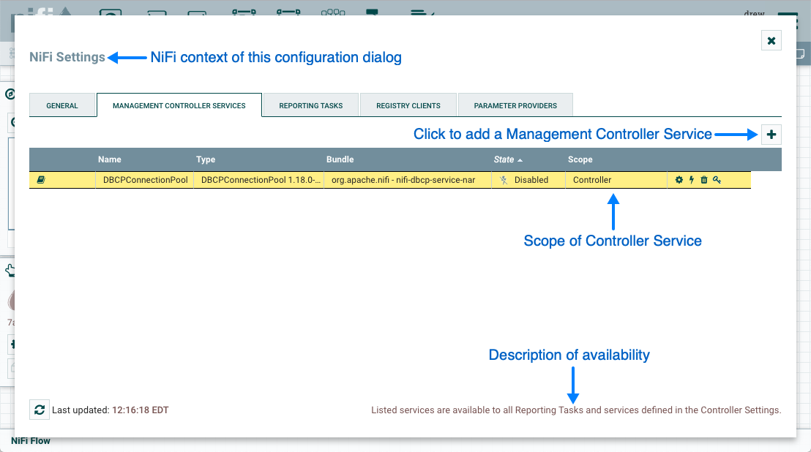
The Add Controller Service window opens. This window is similar to the Add Processor window. It provides a list of the available Controller Services on the right and a tag cloud, showing the most common category tags used for Controller Services, on the left. The DFM may click any tag in the tag cloud in order to narrow down the list of Controller Services to those that fit the categories desired. The DFM may also use the Filter field at the top-right of the window to search for the desired Controller Service or use the Source drop-down at the top-left to filter the list by the group who created them. Upon selecting a Controller Service from the list, the DFM can see a description of the service below. Select the desired controller service and click Add, or simply double-click the name of the service to add it.
Once you have added a Controller Service, you can configure it by clicking the "Configure" button in the far-right column. Other buttons in this column include "Enable", "Remove" and "Access Policies".
You can obtain information about Controller Services by clicking the "Usage", "Comments" and "Alerts" buttons in the left-hand column.
When the DFM clicks the "Configure" button, a Configure Controller Service window opens. It has three tabs: Settings, Properties,and Comments. This window is similar to the Configure Processor window.
The Settings tab provides a place for the DFM to give the Controller Service a unique name (if desired). It also lists the UUID, Type, Bundle and Support information for the service and provides a list of other components (reporting tasks or other controller services) that reference the service.
Finally, the Bulletin level is able to be modified. Whenever the Controller Service writes to its log, the Controller Service will also generate a Bulletin. This setting indicates the lowest level of Bulletin that should be shown in the User Interface. By default, the Bulletin level is set to WARN, which means it will display all warning and error-level bulletins.
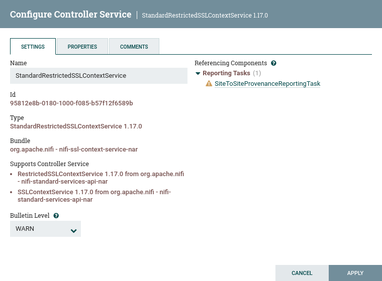
The Properties tab lists the various properties that apply to the particular controller service. As with configuring processors, the DFM may hover over the question mark icons to see more information about each property.
The Comments tab is just an open-text field, where the DFM may include comments about the service. After configuring a Controller Service, click "Apply" to save the configuration and close the window, or click "Cancel" to discard the changes and close the window.
Adding Controller Services for Dataflows
To add a Controller Service for a dataflow, you can either right click a Process Group and select Configure, or click Configure from the Operate Palette.
When you click Configure from the Operate Palette with nothing selected on your canvas, you add a Controller Service for your Root Process Group. That Controller Service is then available to all nested Process Groups in your dataflow. When you select a Process Group on the canvas and then click Configure from either the Operate Palette or the Process Group context menu, the service will be available to all Processors and Controller Services defined in that Process Group and below.
Use the following steps to add a Controller Service:
-
Click Configure, either from the Operate Palette, or from the Process Group context menu. This displays the process group Configuration window. The window has two tabs: General and Controller Services. The General Tab is for settings that pertain to general information about the process group.
-
From the Process Group Configuration page, select the Controller Services tab.
-
Click the
+button to display the Add Controller Service dialog. -
Select the Controller Service desired, and click Add.
-
Perform any necessary Controller Service configuration tasks by clicking the Configure icon () in the right-hand column.
Enabling/Disabling Controller Services
After a Controller Service has been configured, it must be enabled in order to run. Do this using the "Enable" button () in the far-right column of the Controller Services tab. In order to modify an existing/running controller service, the DFM needs to stop/disable it (as well as all referencing reporting tasks and controller services). Do this using the "Disable" button (). Rather than having to hunt down each component that is referenced by that controller service, the DFM has the ability to stop/disable them when disabling the controller service in question. When enabling a controller service, the DFM has the option to either start/enable the controller service and all referencing components or start/enable only the controller service itself.
Reporting Tasks
Reporting Tasks run in the background to provide statistical reports about what is happening in the NiFi instance. The DFM adds and configures Reporting Tasks similar to the process for Controller Services. To add a Reporting Task, select Controller Settings from the Global Menu.
This displays the NiFi Settings window. Select the Reporting Tasks tab and click the + button in the upper-right corner to create a new Reporting Task.
The Add Reporting Task window opens. This window is similar to the Add Processor window. It provides a list of the available Reporting Tasks on the right and a tag cloud, showing the most common category tags used for Reporting Tasks, on the left. The DFM may click any tag in the tag cloud in order to narrow down the list of Reporting Tasks to those that fit the categories desired. The DFM may also use the Filter field at the top-right of the window to search for the desired Reporting Task or use the Source drop-down at the top-left to filter the list by the group who created them. Upon selecting a Reporting Task from the list, the DFM can see a description of the task below. Select the desired reporting task and click Add, or simply double-click the name of the service to add it.

Once a Reporting Task has been added, the DFM may configure it by clicking the "Edit" button in the far-right column. Other buttons in this column include "Start", "Remove", "State" and "Access Policies".
You can obtain information about Reporting Tasks by clicking the "View Details", "Usage", "Comments" and "Alerts" buttons in the left-hand column.
When the DFM clicks the "Edit" button, a Configure Reporting Task window opens. It has three tabs: Settings, Properties, and Comments. This window is similar to the Configure Processor window. The Settings tab provides a place for the DFM to give the Reporting Task a unique name (if desired). It also lists the UUID, Type, and Bundle information for the task and provides settings for the task’s Scheduling Strategy and Run Schedule (similar to the same settings in a processor). The DFM may hover the mouse over the question mark icons to see more information about each setting.
The Properties tab lists the various properties that may be configured for the task. The DFM may hover the mouse over the question mark icons to see more information about each property.
The Comments tab is just an open-text field, where the DFM may include comments about the task. After configuring the Reporting Task, click "Apply" to save the configuration and close the window, or click "Cancel" to discard the changes and close the window.
When you want to run the Reporting Task, click the "Start" button ().
Connecting Components
Once processors and other components have been added to the canvas and configured, the next step is to connect them to one another so that NiFi knows what to do with each FlowFile after it has been processed. This is accomplished by creating a Connection between each component. When the user hovers the mouse over the center of a component, a new Connection icon ( ) appears:

The user drags the Connection bubble from one component to another until the second component is highlighted. When the user releases the mouse, a 'Create Connection' dialog appears. This dialog consists of two tabs: 'Details' and 'Settings'. They are discussed in detail below. Note that it is possible to draw a connection so that it loops back on the same processor. This can be useful if the DFM wants the processor to try to re-process FlowFiles if they go down a failure Relationship. To create this type of looping connection, simply drag the connection bubble away and then back to the same processor until it is highlighted. Then release the mouse and the same 'Create Connection' dialog appears.
Details Tab
The Details tab of the 'Create Connection' dialog provides information about the source and destination components, including the component name, the component type, and the Process Group in which the component lives:

Additionally, this tab provides the ability to choose which Relationships should be included in this Connection. At least one Relationship must be selected. If only one Relationship is available, it is automatically selected.
| If multiple Connections are added with the same Relationship, any FlowFile that is routed to that Relationship will automatically be 'cloned', and a copy will be sent to each of those Connections. |
Settings
The Settings tab provides the ability to configure the Connection’s Name, FlowFile Expiration, Back Pressure Thresholds, Load Balance Strategy and Prioritization:

The Connection name is optional. If not specified, the name shown for the Connection will be names of the Relationships that are active for the Connection.
FlowFile Expiration
FlowFile expiration is a concept by which data that cannot be processed in a timely fashion can be automatically removed from the flow.
This is useful, for example, when the volume of data is expected to exceed the volume that can be sent to a remote site.
In this case, the expiration can be used in conjunction with Prioritizers to ensure that the highest priority data is
processed first and then anything that cannot be processed within a certain time period (one hour, for example) can be dropped. The expiration period is based on the time that the data entered the NiFi instance. In other words, if the file expiration on a given connection is set to '1 hour', and a file that has been in the NiFi instance for one hour reaches that connection, it will expire. The default
value of 0 sec indicates that the data will never expire. When a file expiration other than '0 sec' is set, a small clock icon appears on the connection label, so the DFM can see it at-a-glance when looking at a flow on the canvas.

Back Pressure
NiFi provides two configuration elements for Back Pressure. These thresholds indicate how much data should be
allowed to exist in the queue before the component that is the source of the Connection is no longer scheduled to run.
This allows the system to avoid being overrun with data. The first option provided is the "Back pressure object threshold."
This is the number of FlowFiles that can be in the queue before back pressure is applied. The second configuration option
is the "Back pressure data size threshold." This specifies the maximum amount of data (in size) that should be queued up before
applying back pressure. This value is configured by entering a number followed by a data size (B for bytes, KB for
kilobytes, MB for megabytes, GB for gigabytes, or TB for terabytes).
By default each new connection added will have a default Back Pressure Object Threshold of 10,000 objects and Back Pressure Data Size Threshold of 1 GB.
These defaults can be changed by modifying the appropriate properties in the nifi.properties file.
|
When back pressure is enabled, small progress bars appear on the connection label, so the DFM can see it at-a-glance when looking at a flow on the canvas. The progress bars change color based on the queue percentage: Green (0-60%), Yellow (61-85%) and Red (86-100%).

Hovering your mouse over a bar displays the exact percentage.

When the queue is completely full, the Connection is highlighted in red.

Load Balancing
Load Balance Strategy
To distribute the data in a flow across the nodes in the cluster, NiFi offers the following load balance strategies:
-
Do not load balance: Do not load balance FlowFiles between nodes in the cluster. This is the default.
-
Partition by attribute: Determines which node to send a given FlowFile to based on the value of a user-specified FlowFile Attribute. All FlowFiles that have the same value for the Attribute will be sent to the same node in the cluster. If the destination node is disconnected from the cluster or if unable to communicate, the data does not fail over to another node. The data will queue, waiting for the node to be available again. Additionally, if a node joins or leaves the cluster necessitating a rebalance of the data, consistent hashing is applied to avoid having to redistribute all of the data.
-
Round robin: FlowFiles will be distributed to nodes in the cluster in a round-robin fashion. If a node is disconnected from the cluster or if unable to communicate with a node, the data that is queued for that node will be automatically redistributed to another node(s). If a node is not able to receive the data as fast other nodes in the cluster, the node may also be skipped for one or more iterations in order to maximize throughput of data distribution across the cluster.
-
Single node: All FlowFiles will be sent to a single node in the cluster. Which node they are sent to is not configurable. If the node is disconnected from the cluster or if unable to communicate with the node, the data that is queued for that node will remain queued until the node is available again.
| In addition to the UI settings, there are Cluster Node Properties related to load balancing that must also be configured in nifi.properties. |
| NiFi persists the nodes that are in a cluster across restarts. This prevents the redistribution of data until all of the nodes have connected. If the cluster is shutdown and a node is not intended to be brought back up, the user is responsible for removing the node from the cluster via the "Cluster" dialog in the UI (see Managing Nodes for more information). |
Load Balance Compression
After selecting the load balance strategy, the user can configure whether or not data should be compressed when being transferred between nodes in the cluster.
The following compression options are available:
-
Do not compress: FlowFiles will not be compressed. This is the default.
-
Compress attributes only: FlowFile attributes will be compressed, but FlowFile contents will not.
-
Compress attributes and content: FlowFile attributes and contents will be compressed.
Load Balance Indicator
When a load balance strategy has been implemented for a connection, a load balance indicator () will appear on the connection:

Hovering over the icon will display the connection’s load balance strategy and compression configuration. The icon in this state also indicates that all data in the connection has been distributed across the cluster.

When data is actively being transferred between the nodes in the cluster, the load balance indicator will change orientation and color:
Cluster Connection Summary
To see where data has been distributed among the cluster nodes, select Summary from the Global Menu. Then select the "Connections" tab and the "View Connection Details" icon for a source:
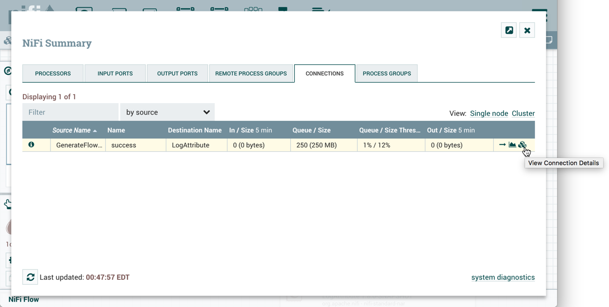
This will open the Cluster Connection Summary dialog, which shows the data on each node in the cluster:

Prioritization
The right-hand side of the tab provides the ability to prioritize the data in the queue so that higher priority data is processed first. Prioritizers can be dragged from the top ('Available prioritizers') to the bottom ('Selected prioritizers'). Multiple prioritizers can be selected. The prioritizer that is at the top of the 'Selected prioritizers' list is the highest priority. If two FlowFiles have the same value according to this prioritizer, the second prioritizer will determine which FlowFile to process first, and so on. If a prioritizer is no longer desired, it can then be dragged from the 'Selected prioritizers' list to the 'Available prioritizers' list.
The following prioritizers are available:
-
FirstInFirstOutPrioritizer: Given two FlowFiles, the one that reached the connection first will be processed first.
-
NewestFlowFileFirstPrioritizer: Given two FlowFiles, the one that is newest in the dataflow will be processed first.
-
OldestFlowFileFirstPrioritizer: Given two FlowFiles, the one that is oldest in the dataflow will be processed first. 'This is the default scheme that is used if no prioritizers are selected'.
-
PriorityAttributePrioritizer: Given two FlowFiles, an attribute called “priority” will be extracted. The one that has the lowest priority value will be processed first.
-
Note that an UpdateAttribute processor should be used to add the "priority" attribute to the FlowFiles before they reach a connection that has this prioritizer set.
-
If only one has that attribute it will go first.
-
Values for the "priority" attribute can be alphanumeric, where "a" will come before "z" and "1" before "9"
-
If "priority" attribute cannot be parsed as a long, unicode string ordering will be used. For example: "99" and "100" will be ordered so the FlowFile with "99" comes first, but "A-99" and "A-100" will sort so the FlowFile with "A-100" comes first.
-
| With a Load Balance Strategy configured, the connection has a queue per node in addition to the local queue. The prioritizer will sort the data in each queue independently. |
Changing Configuration and Context Menu Options
After a connection has been drawn between two components, the connection’s configuration may be changed, and the connection may be moved to a new destination; however, the processors on either side of the connection must be stopped before a configuration or destination change may be made.
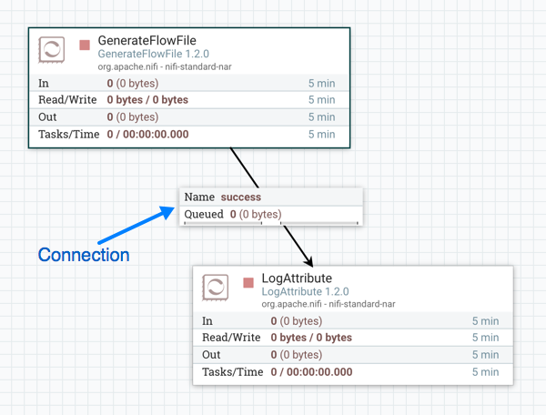
To change a connection’s configuration or interact with the connection in other ways, right-click on the connection to open the connection context menu.
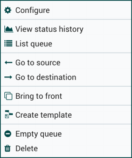
The following options are available:
-
Configure: This option allows the user to change the configuration of the connection.
-
View status history: This option opens a graphical representation of the connection’s statistical information over time.
-
List queue: This option lists the queue of FlowFiles that may be waiting to be processed.
-
Go to source: This option can be useful if there is a long distance between the connection’s source and destination components on the canvas. By clicking this option, the view of the canvas will jump to the source of the connection.
-
Go to destination: Similar to the "Go to source" option, this option changes the view to the destination component on the canvas and can be useful if there is a long distance between two connected components.
-
Bring to front: This option brings the connection to the front of the canvas if something else (such as another connection) is overlapping it.
-
Empty queue: This option allows the DFM to clear the queue of FlowFiles that may be waiting to be processed. This option can be especially useful during testing, when the DFM is not concerned about deleting data from the queue. When this option is selected, users must confirm that they want to delete the data in the queue.
-
Delete: This option allows the DFM to delete a connection between two components. Note that the components on both sides of the connection must be stopped and the connection must be empty before it can be deleted.
Bending Connections
To add a bend point (or elbow) to an existing connection, simply double-click on the connection in the spot where you want the bend point to be. Then, you can use the mouse to grab the bend point and drag it so that the connection is bent in the desired way. You can add as many bend points as you want. You can also use the mouse to drag and move the label on the connection to any existing bend point. To remove a bend point, simply double-click it again.
Processor Validation
Before trying to start a Processor, it’s important to make sure that the Processor’s configuration is valid. A status indicator is shown in the top-left of the Processor. If the Processor is invalid, the indicator will show a yellow Warning indicator with an exclamation mark indicating that there is a problem:
In this case, hovering over the indicator icon with the mouse will provide a tooltip showing all of the validation errors for the Processor. Once all of the validation errors have been addressed, the status indicator will change to a Stop icon, indicating that the Processor is valid and ready to be started but currently is not running:
Site-to-Site
When sending data from one instance of NiFi to another, there are many different protocols that can be used. The preferred protocol, though, is the NiFi Site-to-Site Protocol. Site-to-Site makes it easy to securely and efficiently transfer data to/from nodes in one NiFi instance or data producing application to nodes in another NiFi instance or other consuming application.
Using Site-to-Site provides the following benefits:
-
Easy to configure
-
After entering the URL(s) of the remote NiFi instance/cluster, the available ports (endpoints) are automatically discovered and provided in a drop-down list.
-
-
Secure
-
Site-to-Site optionally makes use of Certificates in order to encrypt data and provide authentication and authorization. Each port can be configured to allow only specific users, and only those users will be able to see that the port even exists. For information on configuring the Certificates, see the Security Configuration section of the System Administrator’s Guide.
-
-
Scalable
-
As nodes in the remote cluster change, those changes are automatically detected and data is scaled out across all nodes in the cluster.
-
-
Efficient
-
Site-to-Site allows batches of FlowFiles to be sent at once in order to avoid the overhead of establishing connections and making multiple round-trip requests between peers.
-
-
Reliable
-
Checksums are automatically produced by both the sender and receiver and compared after the data has been transmitted, in order to ensure that no corruption has occurred. If the checksums don’t match, the transaction will simply be canceled and tried again.
-
-
Automatically load balanced
-
As nodes come online or drop out of the remote cluster, or a node’s load becomes heavier or lighter, the amount of data that is directed to that node will automatically be adjusted.
-
-
FlowFiles maintain attributes
-
When a FlowFile is transferred over this protocol, all of the FlowFile’s attributes are automatically transferred with it. This can be very advantageous in many situations, as all of the context and enrichment that has been determined by one instance of NiFi travels with the data, making for easy routing of the data and allowing users to easily inspect the data.
-
-
Adaptable
-
As new technologies and ideas emerge, the protocol for handling Site-to-Site communications are able to change with them. When a connection is made to a remote NiFi instance, a handshake is performed in order to negotiate which protocol and which version of the protocol will be used. This allows new capabilities to be added while still maintaining backward compatibility with all older instances. Additionally, if a vulnerability or deficiency is ever discovered in a protocol, it allows a newer version of NiFi to forbid communication over the compromised versions of the protocol.
-
Site-to-Site is a protocol transferring data between two NiFi instances. Both end can be a standalone NiFi or a NiFi cluster. In this section, the NiFi instance initiates the communications is called Site-to-Site client NiFi instance and the other end as Site-to-Site server NiFi instance to clarify what configuration needed on each NiFi instances.
A NiFi instance can be both client and server for Site-to-Site protocol, however, it can only be a client or server within a specific Site-to-Site communication. For example, if there are three NiFi instances A, B and C. A pushes data to B, and B pulls data from C. A — push → B ← pull — C. Then B is not only a server in the communication between A and B, but also a client in B and C.
It is important to understand which NiFi instance will be the client or server in order to design your data flow, and configure each instance accordingly. Here is a summary of what components run on which side based on data flow direction:
-
Push: a client sends data to a Remote Process Group, the server receives it with an Input Port
-
Pull: a client receives data from a Remote Process Group, the server sends data through an Output Port
Configure Site-to-Site client NiFi instance
Remote Process Group: In order to communicate with a remote NiFi instance via Site-to-Site, simply drag a Remote Process Group onto the canvas and enter the URL(s) of the remote NiFi instance (for more information on the components of a Remote Process Group, see the Remote Process Group Transmission section of this guide.) The URL is the same URL you would use to go to that instance’s User Interface or in the case of a cluster, the URLs of the cluster nodes. At this point, you can drag a connection to or from the Remote Process Group in the same way you would drag a connection to or from a Processor or a local Process Group. When you drag the connection, you will have a chance to choose which Port to connect to. Note that it may take up to one minute for the Remote Process Group to determine which ports are available.
If the connection is dragged starting from the Remote Process Group, the ports shown will be the Output Ports of the remote group, as this indicates that you will be pulling data from the remote instance. If the connection instead ends on the Remote Process Group, the ports shown will be the Input Ports of the remote group, as this implies that you will be pushing data to the remote instance.
| If the remote instance is configured to use secure data transmission, you will see only ports that you are authorized to communicate with. For information on configuring NiFi to run securely, see the System Administrator’s Guide. |
Transport Protocol: On a Remote Process Group creation or configuration dialog, you can choose Transport Protocol to use for Site-to-Site communication as shown in the following image:
By default, it is set to RAW which uses raw socket communication using a dedicated port. HTTP transport protocol is especially useful if the remote NiFi instance is in a restricted network that only allow access through HTTP(S) protocol or only accessible from a specific HTTP Proxy server. For accessing through a HTTP Proxy Server, BASIC and DIGEST authentication are supported.
Local Network Interface: In some cases, it may be desirable to prefer one network interface over another. For example, if a wired interface and a wireless interface both exist, the wired interface may be preferred. This can be configured by specifying the name of the network interface to use in this box. If the value entered is not valid, the Remote Process Group will not be valid and will not communicate with other NiFi instances until this is resolved.
Configure Site-to-Site Server NiFi Instance
Retrieve Site-to-Site Details: If your NiFi is running securely, in order for another NiFi instance to retrieve information from your instance, it needs to be added to the Global Access "retrieve site-to-site details" policy. This will allow the other instance to query your instance for details such as name, description, available peers (nodes when clustered), statistics, OS port information and available Input and Output ports. Utilizing Input and Output ports in a secured instance requires additional policy configuration as described below.
Input Port: In order to allow another NiFi instance to push data to your local instance, you can simply drag an Input Port onto the Root Process Group of your canvas. After entering a name for the port, it will be added to your flow. You can now right-click on the Input Port and choose Configure in order to adjust the name and the number of concurrent tasks that are used for the port.
To create an Input Port for Site-to-Site in a child Process Group, enter the name for the port and select "Remote connections (site-to-site)" from the Receive From drop-down menu.
If Site-to-Site is configured to run securely, you will need to manage the input port’s "receive data via site-to-site" component access policy. Only those users who have been added to the policy will be able to communicate with the port.
Output Port: Similar to an Input Port, a DataFlow Manager may choose to add an Output Port to the Root Process Group. The Output Port allows an authorized NiFi instance to remotely connect to your instance and pull data from the Output Port. After dragging an Output Port onto the canvas, right-click and choose Configure to adjust the name and how many concurrent tasks are allowed. Manage the output port’s "receive data via site-to-site" component access policy to control which users are authorized to pull data from the instance being configured.
To create an Output Port for Site-to-Site in a child Process Group, enter the name for the port and select "Remote connections (site-to-site)" from the Send To drop-down menu.
In addition to other instances of NiFi, some other applications may use a Site-to-Site client in order to push data to or receive data from a NiFi instance.
| For information on how to enable and configure Site-to-Site on a NiFi instance, see the Site-to-Site Properties section of the System Administrator’s Guide. |
| For information on how to configure access policies, see the Access Policies section of the System Administrator’s Guide. |
Example Dataflow
This section has described the steps required to build a dataflow. Now, to put it all together. The following example dataflow consists of just two processors: GenerateFlowFile and LogAttribute. These processors are normally used for testing, but they can also be used to build a quick flow for demonstration purposes and see NiFi in action.
After you drag the GenerateFlowFile and LogAttribute processors to the canvas and connect them (using the guidelines provided above), configure them as follows:
-
Generate FlowFile
-
On the Scheduling tab, set Run schedule to: 5 sec. Note that the GenerateFlowFile processor can create many FlowFiles very quickly; that’s why setting the Run schedule is important so that this flow does not overwhelm the system NiFi is running on.
-
On the Properties tab, set File Size to: 10 KB
-
-
Log Attribute
-
On the Settings tab, under Auto-terminate relationships, select the checkbox next to Success. This will terminate FlowFiles after this processor has successfully processed them.
-
Also on the Settings tab, set the Bulletin level to Info. This way, when the dataflow is running, this processor will display the bulletin icon (see Anatomy of a Processor), and the user may hover over it with the mouse to see the attributes that the processor is logging.
-
The dataflow should look like the following:
Now see the following section on how to start and stop the dataflow. When the dataflow is running, be sure to note the statistical information that is displayed on the face of each processor (see Anatomy of a Processor).
Command and Control of the DataFlow
When a component is added to the NiFi canvas, it is in the Stopped state. In order to cause the component to be triggered, the component must be started. Once started, the component can be stopped at any time. From a Stopped state, the component can be configured, started, or disabled.
Starting a Component
In order to start a component, the following conditions must be met:
-
The component’s configuration must be valid.
-
All defined Relationships for the component must be connected to another component or auto-terminated.
-
The component must be stopped.
-
The component must be enabled.
-
The component must have no active tasks. For more information about active tasks, see the "Anatomy of …" sections under Monitoring of DataFlow (Anatomy of a Processor, Anatomy of a Process Group, Anatomy of a Remote Process Group).
Components can be started by selecting all of the components to start and then clicking the "Start" button ( ) in the Operate Palette or by right-clicking a single component and choosing Start from the context menu.
If starting a Process Group, all components within that Process Group (including child Process Groups) will be started, with the exception of those components that are invalid or disabled.
Once started, the status indicator of a Processor will change to a Play symbol ( ).
Stopping a Component
A component can be stopped any time that it is running. A component is stopped by right-clicking on the component and clicking Stop from the context menu, or by selecting the component and clicking the "Stop" button ( ) in the Operate Palette.
If a Process Group is stopped, all of the components within the Process Group (including child Process Groups) will be stopped.
Once stopped, the status indicator of a component will change to the Stop symbol (
 ).
).
Stopping a component does not interrupt its currently running tasks. Rather, it stops scheduling new tasks to be performed. The number of active tasks is shown in the top-right corner of the Processor (See Anatomy of a Processor for more information). See Terminating a Component’s Tasks for how to terminate the running tasks.
Terminating a Component’s Tasks
When a component is stopped, it does not interrupt the currently running tasks. This allows for the current execution to complete while no new tasks are scheduled, which is the desired behavior in many cases. In some cases, it is desirable to terminate the running tasks, particularly in cases where a task has hung and is no longer responsive, or while developing new flows.
To be able to terminate the running task(s), the component must first be stopped (see Stopping a Component). Once the component is in the
Stopped state, the Terminate option will become available only if there are tasks still running (see Anatomy of a Processor). The Terminate option
( ) can be accessed via the context menu or the Operate Palette while the component is selected.
) can be accessed via the context menu or the Operate Palette while the component is selected.
The number of tasks that are actively being terminated will be displayed in parentheses next to the number of active tasks (). For example, if there is one active task at the time that Terminate is selected, this will display "0 (1)" - meaning 0 active tasks and 1 task being terminated.
A task may not terminate immediately, as different components may respond to the Terminate command differently. However, the components can be reconfigured and started/stopped regardless of whether there are tasks still in the terminating state.
Enabling/Disabling a Component
When a component is enabled, it is able to be started. Users may choose to disable components when they are part of a dataflow that is still being assembled, for example. Typically, if a component is not intended to be run, the component is disabled, rather than being left in the Stopped state. This helps to distinguish between components that are intentionally not running and those that may have been stopped temporarily (for instance, to change the component’s configuration) and inadvertently were never restarted.
When it is desirable to re-enable a component, it can be enabled by selecting the component and clicking the "Enable" button ( ) in the Operate Palette. This is available only when the selected component or components are disabled. Alternatively, a component can be enabled by checking the checkbox next to the "Enabled" option in the Settings tab of the Processor configuration dialog or the configuration dialog for a Port.
Once enabled, the component’s status indicator will change to either Invalid (
) or Stopped (
), depending on whether or not the component is valid.
A component is then disabled by selecting the component and clicking the "Disable" button ( ) in the Operate Palette, or by clearing the checkbox next to the "Enabled" option in the Settings tab of the Processor configuration dialog or the configuration dialog for a Port.
Only Ports and Processors can be enabled and disabled.
Remote Process Group Transmission
Remote Process Groups provide a mechanism for sending data to or retrieving data from a remote instance of NiFi. When a Remote Process Group (RPG) is added to the canvas, it is added with the Transmission Disabled, as indicated by the icon ( ) in the top-left corner. When Transmission is Disabled, it can be enabled by right-clicking on the RPG and clicking the "Enable transmission" menu item. This will cause all ports for which there is a Connection to begin transmitting data. This will cause the status indicator to then change to the Transmission Enabled icon ( ).
If there are problems communicating with the Remote Process Group, a Warning indicator ( ) may instead be present in the top-left corner. Hovering over this Warning indicator with the mouse will provide more information about the problem.
Individual Port Transmission
There are times when the DFM may want to either enable or disable transmission for only a specific port within the Remote Process Group. This can be accomplished by right-clicking on the Remote Process Group and choosing the "Manage remote ports" menu item. This provides a configuration dialog from which ports can be configured:
The left-hand side lists all of the Input Ports that the remote instance of NiFi allows data to be sent to. The right-hand side lists all of the Output Ports from which this instance is able to pull data. If the remote instance is using secure communications (the URL of the NiFi instance begins with https://, rather than http://), any ports that the remote instance has not made available to this instance will not be shown.
| If a port that is expected to be shown is not shown in this dialog, ensure that the instance has proper permissions and that the Remote Process Group’s flow is current. This can be checked by closing the Remote Process Group Ports dialog and looking at the bottom-left corner of the Remote Process Group. The date and time when the flow was last refreshed is displayed. If the flow appears to be outdated, it can be updated by right-clicking on the Remote Process Group and selecting "Refresh remote". (See Anatomy of a Remote Process Group for more information). |
Each port is shown with its Name, its Description, configured number of Concurrent Tasks, and whether or not data sent to this port will be Compressed. Additionally, the port’s configured Batch Settings (Count, Size and Duration) are displayed. To the left of this information is a toggle switch to turn the port on or off. Ports that have no connections attached to them are grayed out:
The on/off toggle switch provides a mechanism to enable and disable transmission for each port in the Remote Process Group independently. Those ports that are connected but are not currently transmitting can be configured by clicking the pencil icon () below the on/off toggle switch. Clicking this icon will allow the DFM to change the number of Concurrent Tasks, whether or not compression should be used when transmitting data to or from this port, and Batch Settings.
For an Input Port, the batch settings control how NiFi sends data to the remote input port in a transaction. NiFi will transfer FlowFiles, as they are queued in incoming relationships, until any of the limits (Count, Size, Duration) is met. If none of the settings are configured, a 500 milliseconds batch duration is used by default.
For an Output Port, the batch settings tells the remote NiFi how NiFi prefers to receive data from the remote output port in a transaction. The remote NiFi will use the specified settings (Count, Size, Duration) to control the transfer of FlowFiles. If none of the settings are configured, a 5 seconds batch duration is used by default.
Navigating within a DataFlow
NiFi provides various mechanisms for getting around a dataflow. The NiFi User Interface section describes various ways to navigate around the NiFi canvas; however, once a flow exists on the canvas, there are additional ways to get from one component to another. When multiple Process Groups exist in a flow, breadcrumbs appear at the bottom of the screen, providing a way to navigate between them. In addition, to enter a Process Group that is currently visible on the canvas, simply double-click it, thereby "drilling down" into it. To leave a Process Group there are multiple ways: from the context menu opened by right-click on the canvas; with the 'Leave group' button on the 'Navigation' panel; with 'esc' key if no modal or context menu is open. Connections also provide a way to jump from one location to another within the flow. Right-click on a connection and select "Go to source" or "Go to destination" in order to jump to one end of the connection or another. This can be very useful in large, complex dataflows, where the connection lines may be long and span large areas of the canvas. Finally, all components provide the ability to jump forward or backward within the flow. Right-click any component (e.g., a processor, process group, port, etc.) and select either "Upstream connections" or "Downstream connections". A dialog window will open, showing the available upstream or downstream connections that the user may jump to. This can be especially useful when trying to follow a dataflow in a backward direction. It is typically easy to follow the path of a dataflow from start to finish, drilling down into nested process groups; however, it can be more difficult to follow the dataflow in the other direction.
Component Linking
A hyperlink can be used to navigate directly to a component on the NiFi canvas. This is especially useful when Multi-Tenant Authorization is configured. For example, a URL can be given to a user to direct them to the specific process group to which they have privileges.
The default URL for a NiFI instance is https://localhost:8443/nifi, which points to the root process group. When a component is selected on the canvas, the URL is updated with the component’s process group id and component id in the form https://localhost:8443/nifi/?processGroupId=<UUID>&componentIds=<UUIDs>;. In the following screenshot, the GenerateFlowFile processor in the process group PG1 is the selected component:
| Linking to multiple components on the canvas is supported, with the restriction that the length of the URL cannot exceed a 2000 character limit. |
Component Alignment
Components on the NiFi canvas can be aligned to more precisely arrange your dataflow. To do this, first select all the components you want to align. Then right-click to see the context menu and select “Align vertically” or “Align horizontally” depending on your desired result.
Search Components in DataFlow
NiFi UI provides searching functionality in order to help easily find components on the canvas. You can use search to find components by name, type, identifier, configuration properties, and their values. Search also makes it possible to refine and narrow the search result based on certain conditions using Filters and Keywords.
processor1
Filters
Filters can be added to the search box as key-value pairs where the keys are predefined and check certain conditions based on the given value. The syntax is "key:value".
group:myGroup processor1
Filters can be used together with other search terms and multiple filters can be used. The only constraint is that the search must start with the filters. Unknown filters or known filters with unknown values are ignored. If the same filter key appears multiple times, the first will be used. The order of different filters has no effect on the result.
scope:here properties:exclude import
The supported filters are the following:
scope: This filter narrows the scope of the search based on the user’s currently active Process Group. The only valid value is "here". The usage of this filter looks like "scope:here". Any other value is considered as invalid, thus the filter will be ignored during search.
group: This filter narrows the scope of the search based on the provided Process Group name or id. Search will be restricted to groups (and their components - including subgroups and their components) the names or ids of which match the filter value. If no group matches the filter, the result list will be empty.
properties: With this, users can prevent property matches to appear in the search result. Valid values are: "no", "none", "false", "exclude" and "0".
Keywords
Users can use pre-defined (case-insensitive) keywords in the search box that will check certain conditions.
disabled
Keywords can be used with filters (see below) but not with other search terms (otherwise they won’t be treated as keywords) and only one keyword can be used at a time. Note however that keywords will also be treated as general search terms at the same time.
scope:here invalid
The supported keywords are the following:
-
Scheduled state
-
disabled: Adds disabled Ports and Processors to the result list.
-
invalid: Adds Ports and Processors to the result list where the component is invalid.
-
running: Adds running Ports and Processors to the result list.
-
stopped: Adds stopped Ports and Processors to the result list.
-
validating: Adds Processors to the result list that are validating at the time.
-
-
Scheduling strategy
-
event: Adds Processors to the result list where the Scheduling Strategy is "Event Driven".
-
timer: Adds Processors to the result list where the Scheduling Strategy is "Timer Driven".
-
-
Execution
-
primary: Adds Processors to the result list that are set to run on the primary node only (whether if the Processor is currently running or not).
-
-
Back pressure
-
back pressure: Adds Connections to the result list that are applying back pressure at the time.
-
pressure: See "back pressure".
-
-
Expiration
-
expiration: Adds Connections to the result list that contain expired FlowFiles.
-
expires: See "expiration".
-
-
Transmission
-
not transmitting: Adds Remote Process Groups to the result list that are not transmitting data at the time.
-
transmitting: Adds Remote Process Groups to the result list that are transmitting data at the time.
-
transmission disabled: See "not transmitting".
-
transmitting enabled: See "transmitting".
-
Monitoring of DataFlow
NiFi provides a great deal of information about the DataFlow in order to monitor its health and status. The Status bar provides information about the overall system health (see NiFi User Interface). Processors, Process Groups, and Remote Process Groups provide fine-grained details about their operations. Connections and Process Groups provide information about the amount of data in their queues. The Summary Page provides information about all of the components on the canvas in a tabular format and also provides System Diagnostics that include disk usage, CPU utilization, and Java Heap and Garbage Collection information. In a clustered environment, this information is available per-node or as aggregates across the entire cluster. We will explore each of these monitoring artifacts below.
Anatomy of a Processor
NiFi provides a significant amount of information about each Processor on the canvas. The following diagram shows the anatomy of a Processor:
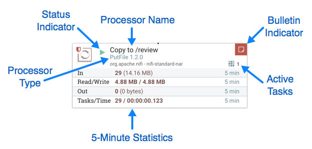
The image outlines the following elements:
-
Processor Type: NiFi provides several different types of Processors in order to allow for a wide range of tasks to be performed. Each type of Processor is designed to perform one specific task. The Processor type (PutFile, in this example) describes the task that this Processor performs. In this case, the Processor writes a FlowFile to disk - or "Puts" a FlowFile to a File.
-
Bulletin Indicator: When a Processor logs that some event has occurred, it generates a Bulletin to notify those who are monitoring NiFi via the User Interface. The DFM is able to configure which bulletins should be displayed in the User Interface by updating the "Bulletin level" field in the "Settings" tab of the Processor configuration dialog. The default value is
WARN, which means that only warnings and errors will be displayed in the UI. This icon is not present unless a Bulletin exists for this Processor. When it is present, hovering over the icon with the mouse will provide a tooltip explaining the message provided by the Processor as well as the Bulletin level. If the instance of NiFi is clustered, it will also show the Node that emitted the Bulletin. Bulletins automatically expire after five minutes. -
Status Indicator: Shows the current Status of the Processor. The following indicators are possible:
-
Running: The Processor is currently running.
-
Stopped: The Processor is valid and enabled but is not running.
-
Invalid: The Processor is enabled but is not currently valid and cannot be started. Hovering over this icon will provide a tooltip indicating why the Processor is not valid.
-
Disabled: The Processor is not running and cannot be started until it has been enabled. This status does not indicate whether or not the Processor is valid.
-
-
Processor Name: This is the user-defined name of the Processor. By default, the name of the Processor is the same as the Processor Type. In the example, this value is "Copy to /review".
-
Active Tasks: The number of tasks that this Processor is currently executing. This number is constrained by the "Concurrent tasks" setting in the "Scheduling" tab of the Processor configuration dialog. Here, we can see that the Processor is currently performing one task. If the NiFi instance is clustered, this value represents the number of tasks that are currently executing across all nodes in the cluster.
-
5-Minute Statistics: The Processor shows several different statistics in tabular form. Each of these statistics represents the amount of work that has been performed in the past five minutes. If the NiFi instance is clustered, these values indicate how much work has been done by all of the Nodes combined in the past five minutes. These metrics are:
-
In: The amount of data that the Processor has pulled from the queues of its incoming Connections. This value is represented as <count> (<size>) where <count> is the number of FlowFiles that have been pulled from the queues and <size> is the total size of those FlowFiles' content. In this example, the Processor has pulled 29 FlowFiles from the input queues, for a total of 14.16 megabytes (MB).
-
Read/Write: The total size of the FlowFile content that the Processor has read from disk and written to disk. This provides valuable information about the I/O performance that this Processor requires. Some Processors may only read the data without writing anything while some will not read the data but will only write data. Others will neither read nor write data, and some Processors will both read and write data. In this example, we see that in the past five minutes, this Processor has read 4.88 MB of the FlowFile content and has written 4.88 MB as well. This is what we would expect, since this Processor simply copies the contents of a FlowFile to disk. Note, however, that this is not the same as the amount of data that it pulled from its input queues. This is because some of the files that it pulled from the input queues already exist in the output directory, and the Processor is configured to route FlowFiles to failure when this occurs. Therefore, for those files which already existed in the output directory, data was neither read nor written to disk.
-
Out: The amount of data that the Processor has transferred to its outbound Connections. This does not include FlowFiles that the Processor removes itself, or FlowFiles that are routed to connections that are auto-terminated. Like the "In" metric above, this value is represented as <count> (<size>) where <count> is the number of FlowFiles that have been transferred to outbound Connections and <size> is the total size of those FlowFiles' content. In this example, all of the Relationships are configured to be auto-terminated, so no FlowFiles are reported as having been transferred Out.
-
Tasks/Time: The number of times that this Processor has been triggered to run in the past 5 minutes, and the amount of time taken to perform those tasks. The format of the time is <hour>:<minute>:<second>. Note that the amount of time taken can exceed five minutes, because many tasks can be executed in parallel. For instance, if the Processor is scheduled to run with 60 Concurrent tasks, and each of those tasks takes one second to complete, it is possible that all 60 tasks will be completed in a single second. However, in this case we will see the Time metric showing that it took 60 seconds, instead of 1 second. This time can be thought of as "System Time," or said another way, this value is 60 seconds because that’s the amount of time it would have taken to perform the action if only a single concurrent task were used.
-
Anatomy of a Process Group
The Process Group provides a mechanism for grouping components together into a logical construct in order to organize the DataFlow in a way that makes it more understandable from a higher level. The following image highlights the different elements that make up the anatomy of a Process Group:

The Process Group consists of the following elements:
-
Name: This is the user-defined name of the Process Group. This name is set when the Process Group is added to the canvas. The name can later by changed by right-clicking on the Process Group and clicking the "Configure" menu option. In this example, the name of the Process Group is "Process Group ABC."
-
Bulletin Indicator: When a child component of a Process Group emits a bulletin, that bulletin is propagated to the component’s parent Process Group, as well. When any component has an active Bulletin, this indicator will appear, allowing the user to hover over the icon with the mouse to see the Bulletin.
-
Active Tasks: The number of tasks that are currently executing by the components within this Process Group. Here, we can see that the Process Group is currently performing two tasks. If the NiFi instance is clustered, this value represents the number of tasks that are currently executing across all nodes in the cluster.
-
Statistics: Process Groups provide statistics about the amount of data that has been processed by the Process Group in the past 5 minutes as well as the amount of data currently enqueued within the Process Group. The following elements comprise the "Statistics" portion of a Process Group:
-
Queued: The number of FlowFiles currently enqueued within the Process Group. This field is represented as <count> (<size>) where <count> is the number of FlowFiles that are currently enqueued in the Process Group and <size> is the total size of those FlowFiles' content. In this example, the Process Group currently has 26 FlowFiles enqueued with a total size of 12.7 megabytes (MB).
-
In: The number of FlowFiles that have been transferred into the Process Group through all of its Input Ports over the past 5 minutes. This field is represented as <count> / <size> → <ports> where <count> is the number of FlowFiles that have entered the Process Group in the past 5 minutes, <size> is the total size of those FlowFiles' content and <ports> is the number of Input Ports. In this example, 8 FlowFiles have entered the Process Group with a total size of 800 KB and two Input Ports exist.
-
Read/Write: The total size of the FlowFile content that the components within the Process Group have read from disk and written to disk. This provides valuable information about the I/O performance that this Process Group requires. In this example, we see that in the past five minutes, components within this Process Group have read 14.72 MB of the FlowFile content and have written 14.8 MB.
-
Out: The number of FlowFiles that have been transferred out of the Process Group through its Output Ports over the past 5 minutes. This field is represented as <ports> → <count> (<size>) where <ports> is the number of Output Ports, <count> is the number of FlowFiles that have exited the Process Group in the past 5 minutes and <size> is the total size of those FlowFiles' content. In this example, there are three Output Ports, 16 FlowFiles have exited the Process Group and their total size is 78.57 KB.
-
-
Component Counts: The Component Counts element provides information about how many components of each type exist within the Process Group. The following provides information about each of these icons and their meanings:
-
Transmitting Ports: The number of Remote Process Group Ports that currently are configured to transmit data to remote instances of NiFi or pull data from remote instances of NiFi.
-
Non-Transmitting Ports: The number of Remote Process Group Ports that are currently connected to components within this Process Group but currently have their transmission disabled.
-
Running Components: The number of Processors, Input Ports, and Output Ports that are currently running within this Process Group.
-
Stopped Components: The number of Processors, Input Ports, and Output Ports that are currently not running but are
valid and enabled. These components are ready to be started.
-
Invalid Components: The number of Processors, Input Ports, and Output Ports that are enabled but are currently not in a valid state. This may be due to misconfigured properties or missing Relationships.
-
Disabled Components: The number of Processors, Input Ports, and Output Ports that are currently disabled. These components may or may not be valid. If the Process Group is started, these components will not cause any errors but will not be started.
-
-
Version State Counts: The Version State Counts element provides information about how many versioned process groups are within the Process Group. See Version States for more information.
-
Comments: When the Process Group is added to the canvas, the user is given the option of specifying Comments in order to provide information about the Process Group. The comments can later be changed by right-clicking on the Process Group and clicking the "Configure" menu option.
Anatomy of a Remote Process Group
When creating a DataFlow, it is often necessary to transfer data from one instance of NiFi to another. In this case, the remote instance of NiFi can be thought of as a Process Group. For this reason, NiFi provides the concept of a Remote Process Group. From the User Interface, the Remote Process Group looks similar to the Process Group. However, rather than showing information about the inner workings and state of a Remote Process Group, such as queue sizes, the information rendered about a Remote Process Group is related to the interaction that occurs between this instance of NiFi and the remote instance.
The image above shows the different elements that make up a Remote Process Group. Here, we provide an explanation of the icons and details about the information provided.
-
Transmission Status: The Transmission Status indicates whether or not data Transmission between this instance of NiFi and the remote instance is currently enabled. The icon shown will be the Transmission Enabled icon ( ) if any of the Input Ports or Output Ports is currently configured to transmit or the Transmission Disabled icon ( ) if all of the Input Ports and Output Ports that are currently connected are stopped.
-
Remote Instance Name: This is the name of the NiFi instance that was reported by the remote instance. When the Remote Process Group is first created, before this information has been obtained, the URL(s) of the remote instance will be shown here instead.
-
Remote Instance URL: This is the URL of the remote instance that the Remote Process Group points to. This URL is entered when the Remote Process Group is added to the canvas and it cannot be changed.
-
Secure Indicator: This icon indicates whether or not communications with the remote NiFi instance are secure. If communications with the remote instance are secure, this will be indicated by the "Locked" icon ( ). If the communications are not secure, this will be indicated by the "Unlocked" icon ( ). If the communications are secure, this instance of NiFi will not be able to communicate with the remote instance until an administrator for the remote instance grants access. Whenever the Remote Process Group is added to the canvas, this will automatically initiate a request to have a user for this instance of NiFi created on the remote instance. This instance will be unable to communicate with the remote instance until an administrator on the remote instance adds the user to the system and adds the "NiFi" role to the user. In the event that communications are not secure, the Remote Process Group is able to receive data from anyone, and the data is not encrypted while it is transferred between instances of NiFi.
-
5-Minute Statistics: Two statistics are shown for Remote Process Groups: Sent and Received. Both of these are in the format <count> (<size>) where <count> is the number of FlowFiles that have been sent or received in the previous five minutes and <size> is the total size of those FlowFiles' content.
-
Last Refresh Time: The information that is pulled from a remote instance and rendered on the Remote Process Group in the User Interface is periodically refreshed in the background. This element indicates the time at which that refresh last happened, or if the information has not been refreshed for a significant amount of time, the value will change to indicate Remote flow not current. NiFi can be triggered to initiate a refresh of this information by right-clicking on the Remote Process Group and choosing the "Refresh remote" menu item.
Queue Interaction
The FlowFiles enqueued in a Connection can be viewed when necessary. The Queue listing is opened via List queue in
a Connection’s context menu. The listing will return the top 100 FlowFiles in the active queue according to the
configured priority. The listing can be performed even if the source and destination are actively running.
Additionally, details for a FlowFile in the listing can be viewed by clicking the "Details" button () in the left most column. From here, the FlowFile details and attributes are available as well as buttons for
downloading or viewing the content. Viewing the content is only available if the nifi.content.viewer.url has been configured.
If the source or destination of the Connection are actively running, there is a chance that the desired FlowFile will
no longer be in the active queue.
The FlowFiles enqueued in a Connection can also be deleted when necessary. The removal of the FlowFiles is initiated
via Empty queue in the Connection’s context menu. This action can also be performed if the source and destination
are actively running.
If the analytics prediction feature is enabled, hovering over the queue will also reveal predicted statistics on when the queue may encounter back pressure, either due to the object count or content size meeting the current threshold settings. Predictions will only be available when NiFi has enough data in its internal repository and if its model is accurate enough to broadcast a prediction. For more information, see the Analytics Framework section in the System Administrator’s Guide.
Summary Page
While the NiFi canvas is useful for understanding how the configured DataFlow is laid out, this view is not always optimal when trying to discern the status of the system. In order to help the user understand how the DataFlow is functioning at a higher level, NiFi provides a Summary page. This page is available in the Global Menu in the top-right corner of the User Interface. See the NiFi User Interface section for more information about the location of this toolbar.
The Summary Page is opened by selecting Summary from the Global Menu. This opens the Summary table dialog:
This dialog provides a great deal of information about each of the components on the canvas. Below, we have annotated the different elements within the dialog in order to make the discussion of the dialog easier.

The Summary page is primarily comprised of a table that provides information about each of the components on the canvas. Above this table is a set of five tabs that can be used to view the different types of components. The information provided in the table is the same information that is provided for each component on the canvas. Each of the columns in the table may be sorted by clicking on the heading of the column. For more on the types of information displayed, see the sections Anatomy of a Processor, Anatomy of a Process Group, and Anatomy of a Remote Process Group above.
The Summary page also includes the following elements:
-
Bulletin Indicator: As in other places throughout the User Interface, when this icon is present, hovering over the icon will provide information about the Bulletin that was generated, including the message, the severity level, the time at which the Bulletin was generated, and (in a clustered environment) the node that generated the Bulletin. Like all the columns in the Summary table, this column where bulletins are shown may be sorted by clicking on the heading so that all the currently existing bulletins are shown at the top of the list.
-
Details: Clicking the Details icon will provide the user with the details of the component. This dialog is the same as the dialog provided when the user right-clicks on the component and chooses the "View Configuration" menu item.
-
Go To: Clicking this button will close the Summary page and take the user directly to the component on the NiFi canvas. This may change the Process Group that the user is currently in. This icon is not available if the Summary page has been opened in a new browser tab or window (by clicking the "Pop Out" button, as described below).
-
Status History: Clicking the Status History icon will open a new dialog that shows a historical view of the statistics that are rendered for this component. See the section Historical Statistics of a Component for more information.
-
Refresh: The "Refresh" button allows the user to refresh the information displayed without closing the dialog and opening it again. The time at which the information was last refreshed is shown just to the right of the "Refresh" button. The information on the page is not automatically refreshed.
-
Filter: The Filter element allows users to filter the contents of the Summary table by typing in all or part of some criteria, such as a Processor Type or Processor Name. The types of filters available differ according to the selected tab. For instance, if viewing the Processor tab, the user is able to filter by name or by type. When viewing the Connections tab, the user is able to filter by source, by name, or by destination name. The filter is automatically applied when the contents of the text box are changed. Below the text box is an indicator of how many entries in the table match the filter and how many entries exist in the table.
-
Pop-Out: When monitoring a flow, it is helpful to be able to open the Summary table in a separate browser tab or window. The "Pop Out" button, next to the "Close" button, will cause the entire Summary dialog to be opened in a new browser tab or window (depending on the configuration of the browser). Once the page is "popped out", the dialog is closed in the original browser tab/window. In the new tab/window, the "Pop Out" button and the "Go To" button will no longer be available.
-
System Diagnostics: The System Diagnostics window provides information about how the system is performing with respect to system resource utilization. While this is intended mostly for administrators, it is provided in this view because it does provide a summary of the system. This dialog shows information such as CPU utilization, how full the disks are, and Java-specific metrics, such as memory size and utilization, as well as Garbage Collection information.
Historical Statistics of a Component
While the Summary table and the canvas show numeric statistics pertaining to the performance of a component over the past five minutes, it is often useful to have a view of historical statistics as well. This information is available by right-clicking on a component and choosing the "Status History" menu option or by clicking on the Status History in the Summary page (see Summary Page for more information).
The amount of historical information that is stored is configurable in the NiFi properties but defaults to 24 hours. For specific
configuration information reference the Component Status Repository of the System Administrator’s Guide.
When the Status History dialog is opened, it provides a graph of historical statistics:
The left-hand side of the dialog provides information about the component that the stats are for, as well as a textual representation of the statistics being graphed. The following information is provided on the left-hand side:
-
Id: The ID of the component for which the stats are being shown.
-
Group Id: The ID of the Process Group in which the component resides.
-
Name: The Name of the Component for which the stats are being shown.
-
Component-Specific Entries: Information is shown for each different type of component. For example, for a Processor, the type of Processor is displayed. For a Connection, the source and destination names and IDs are shown.
-
Start: The earliest time shown on the graph.
-
End: The latest time shown on the graph.
-
Min/Max/Mean: The minimum, maximum, and mean (arithmetic mean, or average) values are shown. These values are based only on the range of time selected, if any time range is selected. If this instance of NiFi is clustered, these values are shown for the cluster as a whole, as well as each individual node. In a clustered environment, each node is shown in a different color. This also serves as the graph’s legend, showing the color of each node that is shown in the graph. Hovering the mouse over the Cluster or one of the nodes in the legend will also make the corresponding node bold in the graph.
The right-hand side of the dialog provides a drop-down list of the different types of metrics to render in the graphs below.
The top graph is larger so as to provide an easier-to-read rendering of the information. In the bottom-right corner of
this graph is a small handle (
 ) that can be dragged to resize the graph. The blank areas of the dialog can also be dragged around
to move the entire dialog.
) that can be dragged to resize the graph. The blank areas of the dialog can also be dragged around
to move the entire dialog.
The bottom graph is much shorter and provides the ability to select a time range. Selecting a time range here will cause the top graph to show only the time range selected, but in a more detailed manner. Additionally, this will cause the Min/Max/Mean values on the left-hand side to be recalculated. Once a selection has been created by dragging a rectangle over the graph, double-clicking on the selected portion will cause the selection to fully expand in the vertical direction (i.e., it will select all values in this time range). Clicking on the bottom graph without dragging will remove the selection.
Versioning a DataFlow
When NiFi is connected to a NiFi Registry, dataflows can be version controlled on the process group level. For more information about NiFi Registry usage and configuration, see the documentation at https://nifi.apache.org/docs/nifi-registry-docs/index.html.
Connecting to a NiFi Registry
To connect NiFi to a Registry, select Controller Settings from the Global Menu.
This displays the NiFi Settings window. Select the Registry Clients tab and click the + button in the upper-right corner to register a new Registry Client.

In the Add Registry Client window, provide a name, select type and add a description (if desired).
Click "Add".
Once a Registry Client has been added, the DFM may configure it by clicking the "Edit" button () in the far-right column. When the DFM clicks the "Edit" button, an Edit Registry Client window opens. It has two tabs: Settings and Properties. The Settings tab provides a place for the DFM to edit the Registry Client name. It also lists the UUID, Type, and provides an open-text field to edit or add a Description.
The Properties tab lists the various properties that may be configured for the client. The DFM may hover the mouse over the question mark icons to see more information about each property.
After configuring a Registry Client, click "Update" to save the configuration and close the window, or click "Cancel" to discard the changes and close the window.
| Versioned flows are stored and organized in registry buckets. Bucket Policies and Special Privileges configured by the registry administrator determine which buckets a user can import versioned flows from and which buckets a user can save versioned flows to. Information on Bucket Policies and Special Privileges can be found in the NiFi Registry User Guide (https://nifi.apache.org/docs/nifi-registry-docs/html/user-guide.html). |
Version States
Versioned process groups exist in the following states:
-
Up to date: The flow version is the latest.
-
Locally modified: Local changes have been made.
-
Stale: A newer version of the flow is available.
-
Locally modified and stale: Local changes have been made and a newer version of the flow is available.
-
Sync failure: Unable to synchronize the flow with the registry.
Version state information is displayed:
-
Next to the process group name, for the versioned process group itself. Hovering over the state icon displays additional information about the versioned flow.
-
At the bottom of a process group, for the versioned flows contained in the process group.
-
In the Status Bar at the top of the UI, for the versioned flows contained in the root process group.
Version state information is also shown in the "Process Groups" tab of the Summary Page.
| To see the most recent version states, it may be necessary to right-click on the NiFi canvas and select 'Refresh' from the context menu. |
Import a Versioned Flow
When a NiFi instance is connected to a registry, an "Import" link will appear in the Add Process Group dialog.
Selecting the link will open the Import Version dialog.
Connected registries will appear as options in the Registry drop-down menu. For the chosen Registry, buckets the user has access to will appear as options in the Bucket drop-down menu. The names of the flows in the chosen bucket will appear as options in the Name drop-down menu. Select the desired version of the flow to import and select "Import" for the dataflow to be placed on the canvas.
The import also provides the option to keep or replace existing Parameter Contexts based on name. Keeping the Parameter Contexts (which is the default behaviour) will use the existing Contexts if Contexts with the same name already exists, resulting shared parameter sets between multiple imports.
Unchecking the checkbox named "Keep Existing Parameter Contexts" will result the creation of a new set of Parameter Contexts for the import, making it completely independent of the existing imports. The parameter values of these new Contexts will be set based on the content of the Registry Snapshot.
Since the version imported in this example is the latest version (MySQL CDC, Version 3), the state of the versioned process group is "Up to date" (). If the version imported had been an older version, the state would be "Stale" ().
Start Version Control
To place a process group under version control, right-click on the process group and in the context menu, select "Version→Start version control".
In the Save Flow Version window, select a Registry and Bucket and enter a Name for the Flow. If desired, add content for the Description and Comment fields.
Select Save and Version 1 of the flow is saved.
As the first and latest version of the flow, the state of the versioned process group is "Up to date" ().
| The root process group can not be placed under version control. |
Managing Local Changes
When changes are made to a versioned process group, the state of the component updates to "Locally modified" (). The DFM can show, revert or commit the local changes. These options are available for selection in the context menu when right-clicking on the process group:
or when right-clicking on the canvas inside the process group:
The following actions are not considered local changes:
-
stopping/starting processors
-
modifying sensitive property values
-
modifying remote process group URLs
-
updating a processor that was referencing a non-existent controller service to reference an externally available controller service
-
assigning, creating, modifying or deleting parameter contexts
-
creating, modifying or deleting variables
| Assigning or creating a parameter context does not trigger a local change because assigning or creating a parameter context on its own has not changed anything about what the flow processes. A component will have to be created or modified that uses a parameter in the parameter context, which will trigger a local change. Modifying a parameter context does not trigger a local change because parameters are intended to be different in each environment. When a versioned flow is imported, it is assumed there is a one-time operation required to set those parameters specific for the given environment. Deleting a parameter context does not trigger a local change because any components that reference parameters in that parameter context will need need to be modified, which will trigger a local change. |
| Creating a variable does not trigger a local change because creating a variable on its own has not changed anything about what the flow processes. A component will have to be created or modified that uses the new variable, which will trigger a local change. Modifying a variable does not trigger a local change because variable values are intended to be different in each environment. When a versioned flow is imported, it is assumed there is a one-time operation required to set those variables specific for the given environment. Deleting a variable does not trigger a local change because the component that references that variable will need need to be modified, which will trigger a local change. |
| Variables do not support sensitive values and will be included when versioning a Process Group. Variables are still supported for compatibility purposes but do not have the same power as Parameters such as support for sensitive properties and more granular control over who can create, modify or use them. Variables will be removed in a future release. As a result, it is highly recommended to switch to Parameters. |
Show Local Changes
The local changes made to a versioned process group can be viewed in the Show Local Changes dialog by selecting "Version→Show local changes" from the context menu.
You can navigate to a component by selecting the "Go To" icon (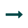) in its row.
| As described in the Managing Local Changes section, there are exceptions to which actions are reviewable local changes. Additionally, multiple changes to the same property will only appear as one change in the list as the changes are determined by diffing the current state of the process group and the saved version of the process group noted in the Show Local Changes dialog. |
Revert Local Changes
Revert the local changes made to a versioned process group by selecting "Version→Revert local changes" from the context menu. The Revert Local Changes dialog displays a list of the local changes for the DFM to review and consider prior to initiating the revert. Select "Revert" to remove all changes.
You can navigate to a component by selecting the "Go To" icon () in its row.
| As described in the Managing Local Changes section, there are exceptions to which actions are revertible local changes. Additionally, multiple changes to the same property will only appear as one change in the list as the changes are determined by diffing the current state of the process group and the saved version of the process group noted in the Revert Local Changes dialog. |
Commit Local Changes
To commit and save a flow version, select "Version→Commit local changes" from the context menu. In the Save Flow Version dialog, add comments if desired and select "Save".
Local changes can not be committed if the version that has been modified is not the latest version. In this scenario, the version state is "Locally modified and stale" ().
Change Version
To change the version of a flow, right-click on the versioned process group and select "Version→Change version".
In the Change Version dialog, select the desired version and select "Change":
The version of the flow is changed:
In the example shown, the versioned flow is upgraded from an older to the newer latest version. However, a versioned flow can also be rollbacked to an older version.
| For "Change version" to be an available selection, local changes to the process group need to be reverted. |
Stop Version Control
To stop version control on a flow, right-click on the versioned process group and select "Version→Stop version control":
In the Stop Version Control dialog, select "Disconnect".
The removal of the process group from version control is confirmed.
Nested Versioned Flows
A versioned process group can contain other versioned process groups. However, local changes to a parent process group cannot be reverted or saved if it contains a child process group that also has local changes. The child process group must first be reverted or have its changes committed for those actions to be performed on the parent process group.
Parameters in Versioned Flows
When exporting a versioned flow to a Flow Registry, the name of the Parameter Context is sent for each process group that is stored. The Parameters (names, descriptions, values, whether or not sensitive) are also stored with the flow. However, Sensitive Parameter values are not stored.
When a versioned flow is imported, a Parameter Context will be created for each one that doesn’t already exist in the NiFi instance. When importing a versioned flow from Flow Registry, if NiFi has a Parameter Context with the same name, the values are merged, as described in the following example:
A flow has a Parameter Context "PC1" with the following parameters:
The flow is exported and saved to the Flow Registry.
A NiFi instance has a Parameter Context also named "PC1" with the following parameters:
The versioned flow is imported into the NiFi instance. The Parameter Context "PC1" now has the following parameters:

The "Letters" parameter did not exist in the NiFi instance and was added. The "Numbers" parameter existed in both the versioned flow and NiFi instance with identical values, so no changes were made. "Password" is a sensitive Parameter missing from the NiFi instance, so it was added but with no value. "Port" existed in the NiFi instance with a different value than the versioned flow, so its value remained unchanged.
Parameter Contexts are handled similarly when a flow version is changed. Consider the following two examples:
If the versioned flow referenced earlier is changed to another version (Version 2) and Version 2’s Parameter Context "PC1" has a "Colors" Parameter, "Colors" will be added to "PC1" in the NiFi instance.
Version 1 of a flow does not have a Parameter Context associated with it. A new version (Version 2) does. When the flow is changed from Version 1 to Version 2, one of the following occurs:
-
A new Parameter Context is created if it does not already exist
-
An existing Parameter Context is assigned (by name) to the Process Group and the values of the Parameter Contexts are merged
Variables in Versioned Flows
Variables are included when a process group is placed under version control. If a versioned flow is imported that references a variable not defined in the versioned process group, the reference is maintained if the variable exists. If the referenced variable does not exist, a copy of the variable will be defined in the process group. To illustrate, assume the variable “RPG_Var" is defined in the root process group:
A process group PG1 is created:
The GetFile processor in PG1 references the variable "RPG_Var":
PG1 is saved as a versioned flow:
If PG1 versioned flow is imported into this same NiFi instance:
the added GetFile processor will also reference the "RPG_Var" variable that exists in the root process group:
If PG1 versioned flow is imported into a different NiFi instance where "RPG_Var" does not exist:
A "RPG_Var" variable is created in the PG1 process group:
Restricted Components in Versioned Flows
To import a versioned flow or revert local changes in a versioned flow, a user must have access to all the components in the versioned flow. As such, it is recommended that restricted components are created at the root process group level if they are to be utilized in versioned flows. Let’s walk through some examples to illustrate the benefits of this configuration. Assume the following:
-
There are two users, "sys_admin" and "test_user" who have access to both view and modify the root process group.
-
"sys_admin" has access to all restricted components.
-
"test_user" has access to restricted components requiring 'read filesystem' and 'write filesystem'.
Restricted Controller Service Created in Root Process Group
In this first example, sys_admin creates a KeytabCredentialsService controller service at the root process group level.
KeytabCredentialService controller service is a restricted component that requires 'access keytab' permissions:
Sys_admin creates a process group ABC containing a flow with GetFile and PutHDFS processors:
GetFile processor is a restricted component that requires 'write filesystem' and 'read filesystem' permissions:
PutHDFS is a restricted component that requires 'write filesystem' permissions:
The PutHDFS processor is configured to use the root process group level KeytabCredentialsService controller service:
Sys_admin saves the process group as a versioned flow:
Test_user changes the flow by removing the KeytabCredentialsService controller service:
If test_user chooses to revert this change:

the revert is successful:
Additionally, if test_user chooses to import the ABC versioned flow:
The import is successful:
Restricted Controller Service Created in Process Group
Now, consider a second scenario where the controller service is created on the process group level.
Sys_admin creates a process group XYZ:
Sys_admin creates a KeytabCredentialsService controller service at the process group level:
The same GetFile and PutHDFS flow is created in the process group:
However, PutHDFS now references the process group level controller service:
Sys_admin saves the process group as a versioned flow.
Test_user changes the flow by removing the KeytabCredentialsService controller service. However, with this configuration, if test_user attempts to revert this change:
the revert is unsuccessful because test_user does not have the 'access keytab' permissions required by the KeytabCredentialService controller service:
Similarly, if test_user tries to import the XYZ versioned flow:
The import fails:
Templates
DFMs have the ability to build very large and complex DataFlows using NiFi. This is achieved by using the basic components: Processor, Funnel, Input/Output Port, Process Group, and Remote Process Group. These can be thought of as the most basic building blocks for constructing a DataFlow. At times, though, using these small building blocks can become tedious if the same logic needs to be repeated several times.
To solve this issue, NiFi provides the concept of a Template. A Template is a way of combining these basic building blocks into larger building blocks. Once a DataFlow has been created, parts of it can be formed into a Template. This Template can then be dragged onto the canvas, or can be exported as an XML file and shared with others. Templates received from others can then be imported into an instance of NiFi and dragged onto the canvas.
Creating a Template
To create a Template, select the components that are to be a part of the template, and then click the "Create Template" () button in the Operate Palette (See NiFi User Interface for more information on the Operate Palette).
Clicking this button without selecting anything will create a Template that contains all of the contents of the current Process Group. This means that creating a Template with nothing selected while on the Root Process Group will create a single Template that contains the entire flow.
After clicking this button, the user is prompted to provide a name and an optional description for the template. Each template must have a unique name. After entering the name and optional description, clicking the "Create" button will generate the template and notify the user that the template was successfully created, or provide an appropriate error message if unable to create the template for some reason.
| It is important to note that if any Processor that is Templated has a sensitive property (such as a password), the value of that sensitive property is not included in the Template. As a result, when dragging the Template onto the canvas, newly created Processors may not be valid if they are missing values for their sensitive properties. Additionally, any Connection that was selected when making the Template is not included in the Template if either the source or the destination of the Connection is not also included in the Template. |
Importing a Template
After receiving a Template that has been exported from another NiFi, the first step needed to use the template is to import the template into this instance of NiFi. You may import templates into any Process Group where you have the appropriate authorization.
From the Operate Palette, click the "Upload Template" () button (see NiFi User Interface for more information on the Operate Palette). This will display the Upload Template dialog. Click the find icon and use the File Selection dialog to choose which template file to upload. Select the file and click Open. Clicking the "Upload" button will attempt to import the Template into this instance of NiFi. The Upload Template dialog will update to show "Success" or an error message if there was a problem importing the template.
Instantiating a Template
Once a Template has been created (see Creating a Template) or imported (see Importing a Template), it is ready to be
instantiated, or added to the canvas. This is accomplished by dragging the Template icon (
) from the Components Toolbar (see NiFi User Interface) onto the canvas.
This will present a dialog to choose which Template to add to the canvas. After choosing the Template to add, simply click the "Add" button. The Template will be added to the canvas with the upper-left-hand side of the Template being placed wherever the user dropped the Template icon.
This leaves the contents of the newly instantiated Template selected. If there was a mistake, and this Template is no longer wanted, it may be deleted.
Managing Templates
One of the most powerful features of NiFi Templates is the ability to easily export a Template to an XML file and to import a Template that has already been exported. This provides a very simple mechanism for sharing parts of a DataFlow with others. You can select Templates from the Global Menu (see NiFi User Interface) to open a dialog that displays all of the Templates that are currently available, filter the templates to see only those of interest, export, and delete Templates.
Exporting a Template
Once a Template has been created, it can be shared with others in the Template Management page. To export a Template, locate the Template in the table. The Filter in the top-right corner can be used to help find the appropriate Template if several are available. Then click the "Download" button (). This will download the template as an XML file to your computer. This XML file can then be sent to others and imported into other instances of NiFi (see Importing a Template).
Removing a Template
Once it is decided that a Template is no longer needed, it can be easily removed from the Template Management page. To delete a Template, locate it in the table (the Filter in the top-right corner
may be used to find the appropriate Template if several are available) and click the "Delete" button (
). This will prompt for confirmation. After confirming the deletion, the Template will be removed from this table
and will no longer be available to add to the canvas.
Data Provenance
While monitoring a dataflow, users often need a way to determine what happened to a particular data object (FlowFile). NiFi’s Data Provenance page provides that information. Because NiFi records and indexes data provenance details as objects flow through the system, users may perform searches, conduct troubleshooting and evaluate things like dataflow compliance and optimization in real time. By default, NiFi updates this information every five minutes, but that is configurable.
To access the Data Provenance page, select "Data Provenance" from the Global Menu. This opens a dialog window that allows the user to see the most recent Data Provenance information available, search the information for specific items, and filter the search results. It is also possible to open additional dialog windows to see event details, replay data at any point within the dataflow, and see a graphical representation of the data’s lineage, or path through the flow. (These features are described in depth below.)
When authorization is enabled, accessing Data Provenance information requires the 'query provenance' Global Policy as well as the 'view provenance' Component Policy for the component which generated the event. In addition, access to event details which include FlowFile attributes and content require the 'view the data' Component Policy for the component which generated the event.

Provenance Events
Each point in a dataflow where a FlowFile is processed in some way is considered a 'provenance event'. Various types of provenance events occur, depending on the dataflow design. For example, when data is brought into the flow, a RECEIVE event occurs, and when data is sent out of the flow, a SEND event occurs. Other types of processing events may occur, such as if the data is cloned (CLONE event), routed (ROUTE event), modified (CONTENT_MODIFIED or ATTRIBUTES_MODIFIED event), split (FORK event), combined with other data objects (JOIN event), and ultimately removed from the flow (DROP event).
The provenance event types are:
| Provenance Event | Description |
|---|---|
ADDINFO |
Indicates a provenance event when additional information such as a new linkage to a new URI or UUID is added |
ATTRIBUTES_MODIFIED |
Indicates that a FlowFile’s attributes were modified in some way |
CLONE |
Indicates that a FlowFile is an exact duplicate of its parent FlowFile |
CONTENT_MODIFIED |
Indicates that a FlowFile’s content was modified in some way |
CREATE |
Indicates that a FlowFile was generated from data that was not received from a remote system or external process |
DOWNLOAD |
Indicates that the contents of a FlowFile were downloaded by a user or external entity |
DROP |
Indicates a provenance event for the conclusion of an object’s life for some reason other than object expiration |
EXPIRE |
Indicates a provenance event for the conclusion of an object’s life due to the object not being processed in a timely manner |
FETCH |
Indicates that the contents of a FlowFile were overwritten using the contents of some external resource |
FORK |
Indicates that one or more FlowFiles were derived from a parent FlowFile |
JOIN |
Indicates that a single FlowFile is derived from joining together multiple parent FlowFiles |
RECEIVE |
Indicates a provenance event for receiving data from an external process |
REMOTE_INVOCATION |
Indicates that a remote invocation was requested to an external endpoint (e.g., deleting a remote resource) |
REPLAY |
Indicates a provenance event for replaying a FlowFile |
ROUTE |
Indicates that a FlowFile was routed to a specified relationship and provides information about why the FlowFile was routed to this relationship |
SEND |
Indicates a provenance event for sending data to an external process |
UNKNOWN |
Indicates that the type of provenance event is unknown because the user who is attempting to access the event is not authorized to know the type |
Searching for Events
One of the most common tasks performed in the Data Provenance page is a search for a given FlowFile to determine what happened to it. To do this, click the "Search" button in the upper-right corner of the Data Provenance page. This opens a dialog window with parameters that the user can define for the search. The parameters include the processing event of interest, distinguishing characteristics about the FlowFile or the component that produced the event, the timeframe within which to search, and the size of the FlowFile.
For example, to determine if a particular FlowFile was received, search for an Event Type of "RECEIVE" and include an identifier for the FlowFile, such as its uuid or filename. The asterisk (*) may be used as a wildcard for any number of characters. So, to determine whether a FlowFile with "ABC" anywhere in its filename was received at any time on July 29, 2016, the search shown in the following image could be performed:
If all filenames that do not have "ABC" anywhere in the filename is desired, then click the checkbox with the label "Exclude from search results" beneath this entry before performing the search.
Details of an Event
In the far-left column of the Data Provenance page, there is a "View Details" icon for each event (). Clicking this button opens a dialog window with three tabs: Details, Attributes, and Content.
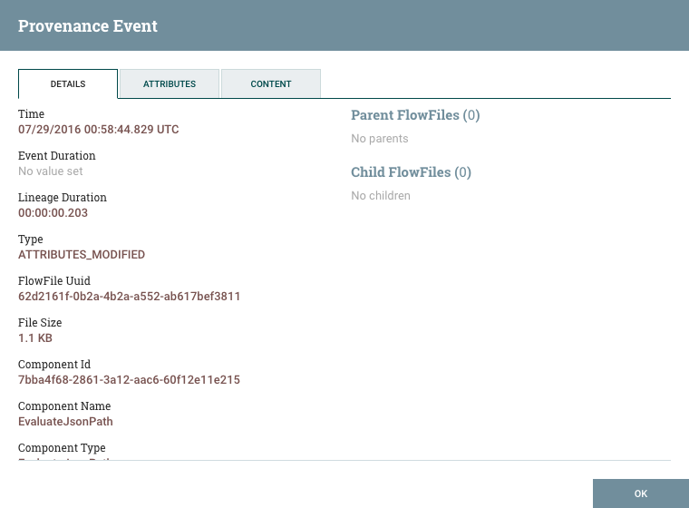
The Details tab shows various details about the event, such as when it occurred, what type of event it was, and the component that produced the event. The information that is displayed will vary according to the event type. This tab also shows information about the FlowFile that was processed. In addition to the FlowFile’s UUID, which is displayed on the left side of the Details tab, the UUIDs of any parent or children FlowFiles that are related to that FlowFile are displayed on the right side of the Details tab.
The Attributes tab shows the attributes that exist on the FlowFile as of that point in the flow. In order to see only the attributes that were modified as a result of the processing event, the user may select the checkbox next to "Only show modified" in the upper-right corner of the Attributes tab.
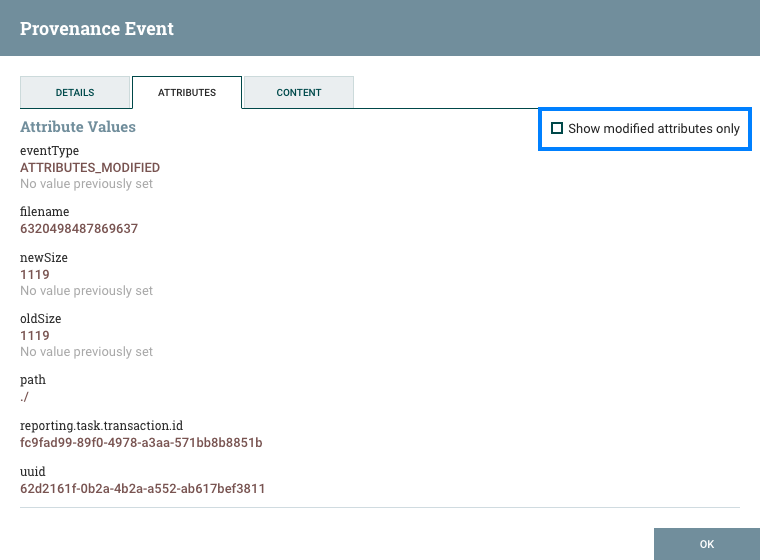
Replaying a FlowFile
A DFM may need to inspect a FlowFile’s content at some point in the dataflow to ensure that it is being processed as expected. And if it is not being processed properly, the DFM may need to make adjustments to the dataflow and replay the FlowFile again. This can be achieved from the Content tab of the View Details dialog window. The Content tab shows information about the FlowFile’s content, such as its location in the Content Repository and its size. In addition, it is here that the user may click the "Download" button to download a copy of the FlowFile’s content as it existed at this point in the flow. The user may also click the "Submit" button to replay the FlowFile at this point in the flow. Upon clicking "Submit", the FlowFile is sent to the connection feeding the component that produced this processing event.
When a user is developing a dataflow, it can be very beneficial to have easy access to replaying a FlowFile, as well. For example, a user may configure a Processor, run a FlowFile through it, and find that the configuration needs to be modified. The user can then update the configuration, and run the same FlowFile through again to verify the results. In order to ease this process, the user can right-click on a Processor and choose the "Replay last event" item. From here, the user can choose to either replay the last event from just the Primary Node or from all nodes.
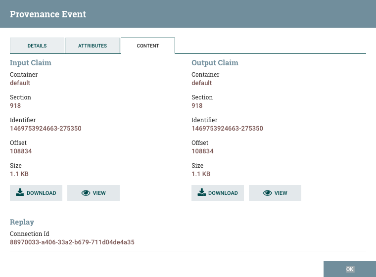
Viewing FlowFile Lineage
It is often useful to see a graphical representation of the lineage or path a FlowFile took within the dataflow. To see a FlowFile’s lineage, click on the "Show Lineage" icon ( ) in the far-right column of the Data Provenance table. This opens a graph displaying the FlowFile ( ) and the various processing events that have occurred. The selected event will be highlighted in red. It is possible to right-click or double-click on any event to see that event’s details (see Details of an Event). To see how the lineage evolved over time, click the slider at the bottom-left of the window and move it to the left to see the state of the lineage at earlier stages in the dataflow.

Find Parents
Sometimes, a user may need to track down the original FlowFile that another FlowFile was spawned from. For example, when a FORK or CLONE event occurs, NiFi keeps track of the parent FlowFile that produced other FlowFiles, and it is possible to find that parent FlowFile in the Lineage. Right-click on the event in the lineage graph and select "Find parents" from the context menu.
Once "Find parents" is selected, the graph is re-drawn to show the parent FlowFile and its lineage as well as the child and its lineage.
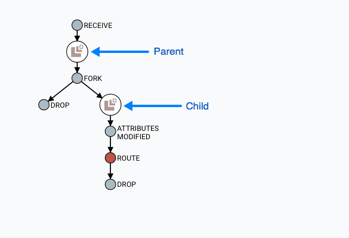
Expanding an Event
In the same way that it is useful to find a parent FlowFile, the user may also want to determine what children were spawned from a given FlowFile. To do this, right-click on the event in the lineage graph and select "Expand" from the context menu.
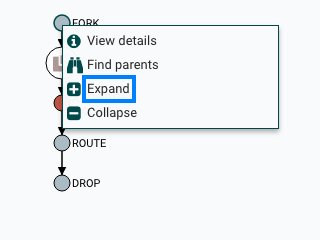
Once "Expand" is selected, the graph is re-drawn to show the children and their lineage.

Write Ahead Provenance Repository
By default, the Provenance Repository is implemented in a Persistent Provenance configuration. In Apache NiFi 1.2.0, the Write Ahead configuration was introduced to provide the same capabilities as Persistent Provenance, but with far better performance. Migrating to the Write Ahead configuration is easy to accomplish. Simply change the setting for the nifi.provenance.repository.implementation system property in the nifi.properties file from the default value of org.apache.nifi.provenance.PersistentProvenanceRepository to org.apache.nifi.provenance.WriteAheadProvenanceRepository and restart NiFi.
However, to increase the chances of a successful migration consider the following factors and recommended actions.
Backwards Compatibility
The WriteAheadProvenanceRepository can use the Provenance data stored by the PersistentProvenanceRepository. However, the PersistentProvenanceRepository may not be able to read the data written by the WriteAheadProvenanceRepository. Therefore, once the Provenance Repository is changed to use the WriteAheadProvenanceRepository, it cannot be changed back to the PersistentProvenanceRepository without first deleting the data in the Provenance Repository. It is therefore recommended that before changing the implementation to Write Ahead, ensure your version of NiFi is stable, in case an issue arises that requires the need to roll back to a previous version of NiFi that did not support the WriteAheadProvenanceRepository.
Older Existing NiFi Version
If you are upgrading from an older version of NiFi to 1.2.0 or later, it is recommended that you do not change the provenance configuration to Write Ahead until you confirm your flows and environment are stable in 1.2.0 first. This reduces the number of variables in your upgrade and can simplify the debugging process if any issues arise.
Bootstrap.conf
While better performance is achieved with the G1 garbage collector, Java 8 bugs may surface more frequently in the Write Ahead configuration. It is recommended that the following line is commented out in the bootstrap.conf file in the conf directory:
java.arg.13=-XX:+UseG1GC
System Properties
Many of the same system properties are supported by both the Persistent and Write Ahead configurations, however the default values have been chosen for a Persistent Provenance configuration. The following exceptions and recommendations should be noted when changing to a Write Ahead configuration:
-
nifi.provenance.repository.journal.countis not relevant to a Write Ahead configuration -
nifi.provenance.repository.concurrent.merge.threadsandnifi.provenance.repository.warm.cache.frequencyare new properties. The default values of2for threads and blank for frequency (i.e., disabled) should remain for most installations. -
Change the settings for
nifi.provenance.repository.max.storage.time(default value of24 hours) andnifi.provenance.repository.max.storage.size(default value of1 GB) to values more suitable for your production environment -
Change
nifi.provenance.repository.index.shard.sizefrom the default value of500 MBto4 GB -
Change
nifi.provenance.repository.index.threadsfrom the default value of2to either4or8as the Write Ahead repository enables this to scale better -
If processing a high volume of events, change
nifi.provenance.repository.rollover.sizefrom the default of100 MBto1 GB
Once these property changes have been made, restart NiFi.
Note: Detailed descriptions for each of these properties can be found in System Properties.
Experimental Warning
While all Apache licensed code is provided "on an "AS IS" BASIS, WITHOUT WARRANTIES OR CONDITIONS OF ANY KIND, either express or implied" (see Apache License, Version 2.0), some features of Apache NiFi may be marked experimental. Experimental features may:
-
have undergone less extensive testing than is normal for standard NiFi features
-
interact with unstable external dependencies
-
be subject to change (any exposed APIs should not be considered covered under the minor release backward compatibility guidelines of Semantic Versioning)
-
potentially cause data loss
-
not be directly supported by the community in the event issues arise
Every attempt is made to provide more detailed and specific information around the nature of the experimental warning on a per-feature basis. Questions around specific experimental features should be directed to the Apache NiFi Developer Mailing List.
Other Management Features
In addition to the Summary Page, Data Provenance Page, Template Management Page, and Bulletin Board Page, there are other tools in the Global Menu (see NiFi User Interface) that are useful to the DFM. Select Flow Configuration History to view all the changes that have been made to the dataflow. The history can aid in troubleshooting, such as if a recent change to the dataflow has caused a problem and needs to be fixed. The DFM can see what changes have been made and adjust the flow as needed to fix the problem. While NiFi does not have an "undo" feature, the DFM can make new changes to the dataflow that will fix the problem.
Select Node Status History to view instance specific metrics from the last 24 hours or if the instance runs for less time, then since it has been started. The status history can help the DFM in troubleshooting performance issues and provides a general view on the health of the node. The status history includes information about the memory usage and disk usage among other things.
Two other tools in the Global Menu are Controller Settings and Users. The Controller Settings page provides the ability to change the name of the NiFi instance, add comments describing the NiFi instance, and set the maximum number of threads that are available to the application. It also provides tabs where DFMs may add and configure Controller Services and Reporting Tasks. The Users page is used to manage user access, which is described in the System Administrator’s Guide.